Chapter 5 Making Pretty Maps
Now that we’ve learned how to do some spatial analysis, you likely want to make a nice looking map to put in a manuscript or presentation.
Note: This workshop is currently a work in progress. All of the mapping elements are present, but the presentation and setup portion are yet to be added. I appreciate your patience as I finish this up in my free time.
5.1 USA Population
# Load the US population shapefile
usa <- st_read("Data/Visualization/US_states", quiet = T)
head(usa)## Simple feature collection with 6 features and 5 fields
## Geometry type: MULTIPOLYGON
## Dimension: XY
## Bounding box: xmin: -124.3834 ymin: 30.24071 xmax: -71.78015 ymax: 42.04937
## Geodetic CRS: WGS 84
## STATE POP2020 POP2010 DIVISION REGION
## 1 Alabama 5024279 4779736 East South Central South
## 2 Arizona 7151502 6392017 Mountain West
## 3 Arkansas 3011524 2915918 West South Central South
## 4 California 39538223 37253956 Pacific West
## 5 Colorado 5773714 5029196 Mountain West
## 6 Connecticut 3605944 3574097 New England Northeast
## geometry
## 1 MULTIPOLYGON (((-87.46201 3...
## 2 MULTIPOLYGON (((-114.6374 3...
## 3 MULTIPOLYGON (((-94.05103 3...
## 4 MULTIPOLYGON (((-120.006 42...
## 5 MULTIPOLYGON (((-102.0552 4...
## 6 MULTIPOLYGON (((-73.49902 4...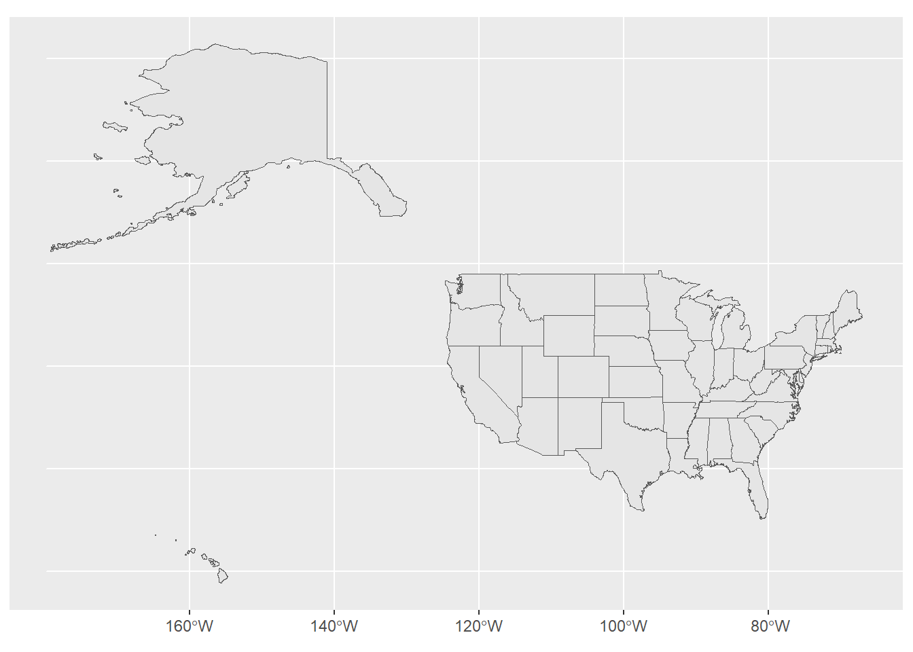
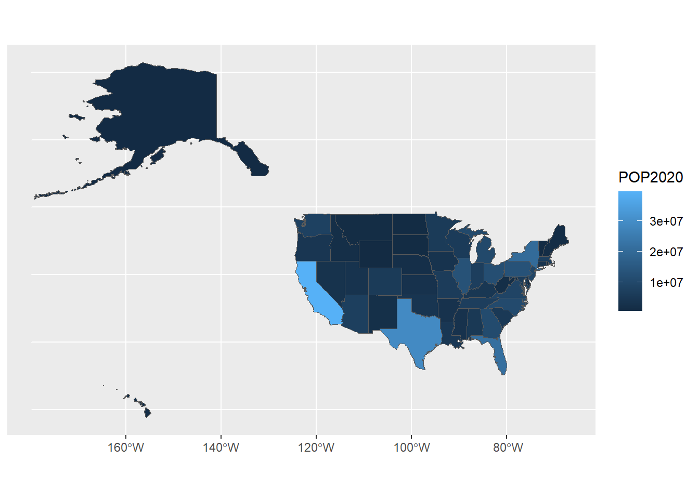
# Add Canada and Mexico to the map
# Adds context for the US (isn't floating in some void but exists in the world)
library(maps)
can_mex <- maps::map("world", plot = F, fill = T) %>%
st_as_sf() %>%
st_transform(4326) %>%
filter(ID %in% c("Canada", "Mexico"))
ggplot(can_mex) +
geom_sf()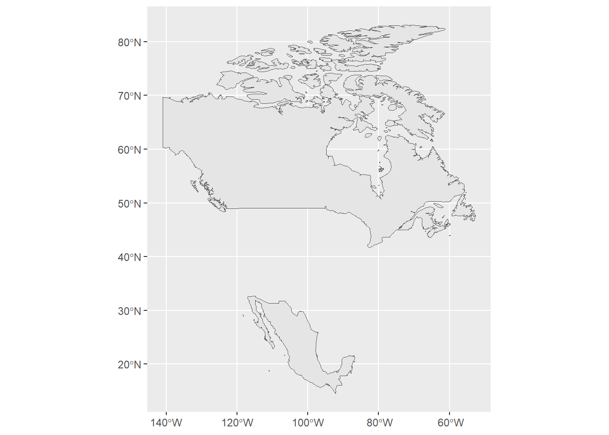
ggplot(usa) +
# make the outline around the states white
geom_sf(aes(fill = POP2020), col = "white") +
# remove the outline around Canada and Mexico and grey them out
# (focuses the eye towards what's important about this map ie US population)
geom_sf(data = can_mex, col = NA, fill = "grey80")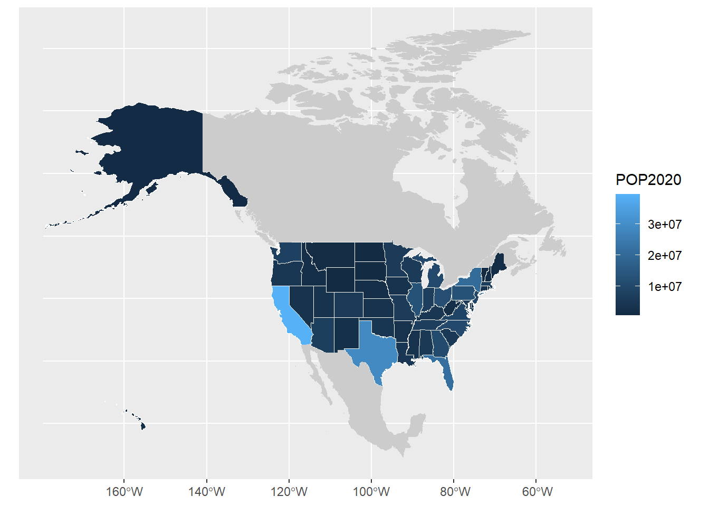
# Add North American lakes to the map
lakes <- maps::map("lakes", plot = F, fill = T) %>%
st_as_sf() %>%
st_transform(4326)
st_bbox(bind_rows(usa, can_mex))## xmin ymin xmax ymax
## -179.23109 18.86546 -67.00742 71.43979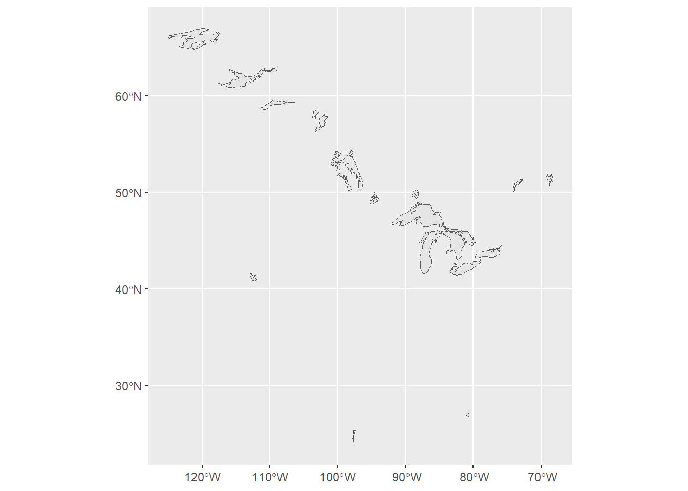
ggplot(usa) +
geom_sf(aes(fill = POP2020), col = "white") +
geom_sf(data = can_mex, col = NA, fill = "grey80") +
geom_sf(data = na_lakes, fill = "white", col = NA) +
theme_bw()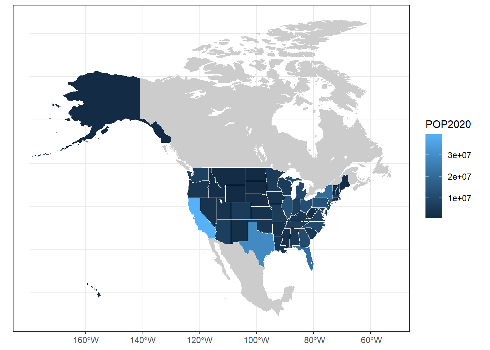
# Filter out Alaska and Hawaii to create just the contiguous USA polygons
contig_usa <- usa %>%
filter(!STATE %in% c("Alaska", "Hawaii"))
ggplot(contig_usa) +
geom_sf()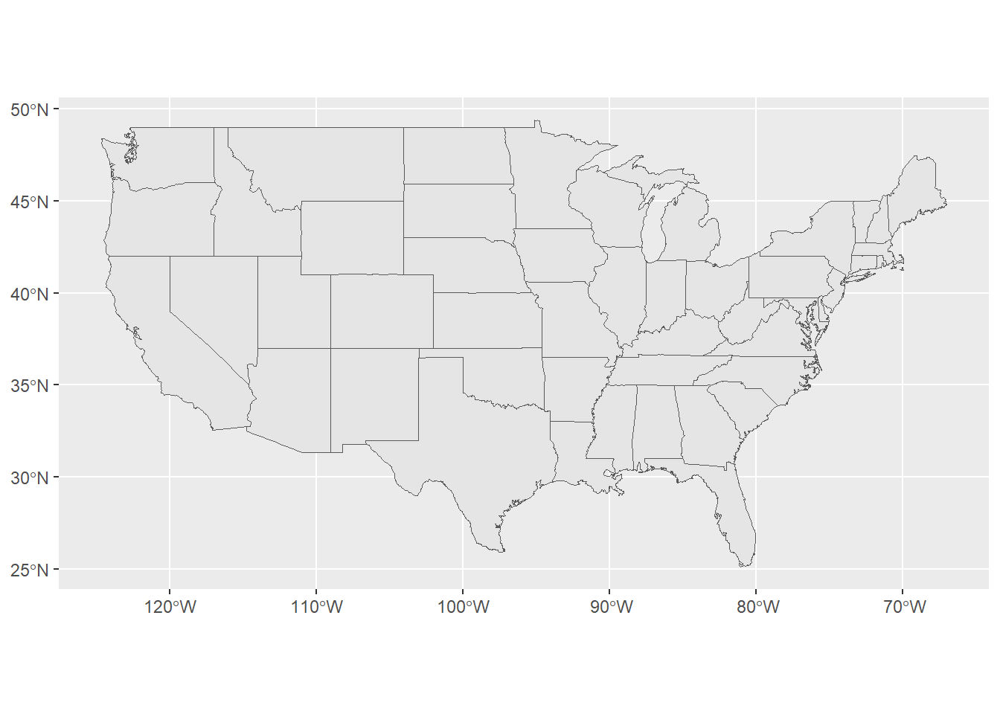
# Project the contiguous USA to Conus Albers (EPSG:6350)
# Standard projection for US maps
contig_usa <- st_transform(contig_usa, 6350)
ggplot(contig_usa) +
geom_sf()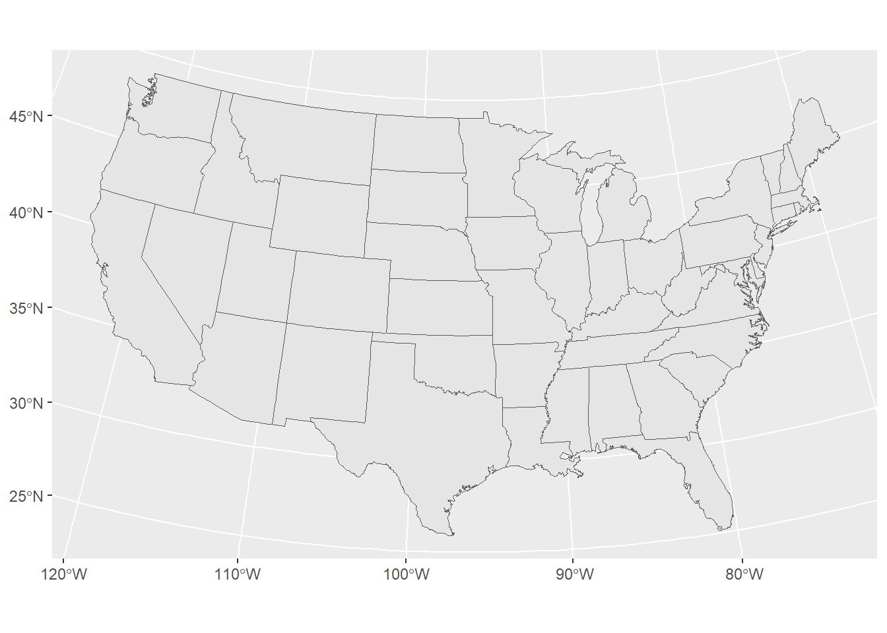
# Project Canada, Mexico, and the lakes to Conus Albers and add to the map
can_mex <- st_transform(can_mex, 6350)
lakes <- st_transform(lakes, 6350)
ggplot(contig_usa) +
geom_sf(aes(fill = POP2020), col = "white") +
geom_sf(data = can_mex, col = NA, fill = "grey80") +
geom_sf(data = na_lakes, fill = "white", col = NA) +
theme_bw()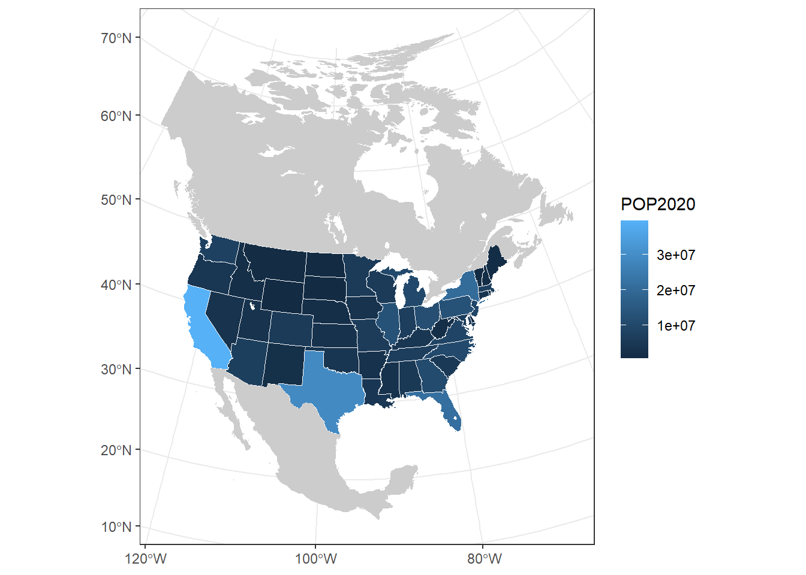
## xmin ymin xmax ymax
## -2353797.2 321803.8 2254131.0 3163215.2us_plot <- ggplot(contig_usa) +
geom_sf(aes(fill = POP2020), col = "white") +
geom_sf(data = can_mex, col = NA, fill = "grey80") +
geom_sf(data = na_lakes, fill = "white", col = NA) +
theme_bw() +
xlim(c(st_bbox(contig_usa)["xmin"], st_bbox(contig_usa)["xmax"])) +
ylim(c(st_bbox(contig_usa)["ymin"] - 1e5, st_bbox(contig_usa)["ymax"] + 1e6))
us_plot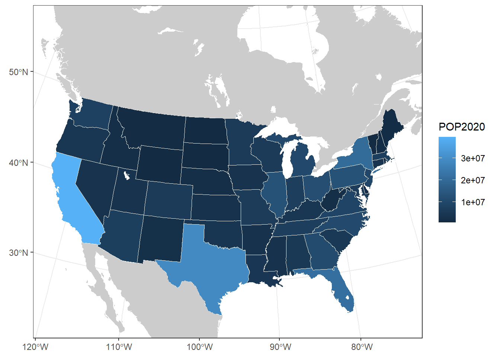
# Filter to create an Alaska and a Hawaii polygon
# We'll add these to the map as inset maps
alaska <- filter(usa, STATE == "Alaska")
alaska <- st_transform(alaska, 3338)
ak_plot <- ggplot(alaska) +
geom_sf(aes(fill = POP2020), col = "white") +
geom_sf(data = can_mex, col = NA, fill = "grey80") +
geom_sf(data = na_lakes, fill = "white", col = NA) +
theme_bw() +
xlim(c(st_bbox(alaska)["xmin"], st_bbox(alaska)["xmax"])) +
ylim(c(st_bbox(alaska)["ymin"], st_bbox(alaska)["ymax"])) +
coord_sf(datum = 3338)
ak_plot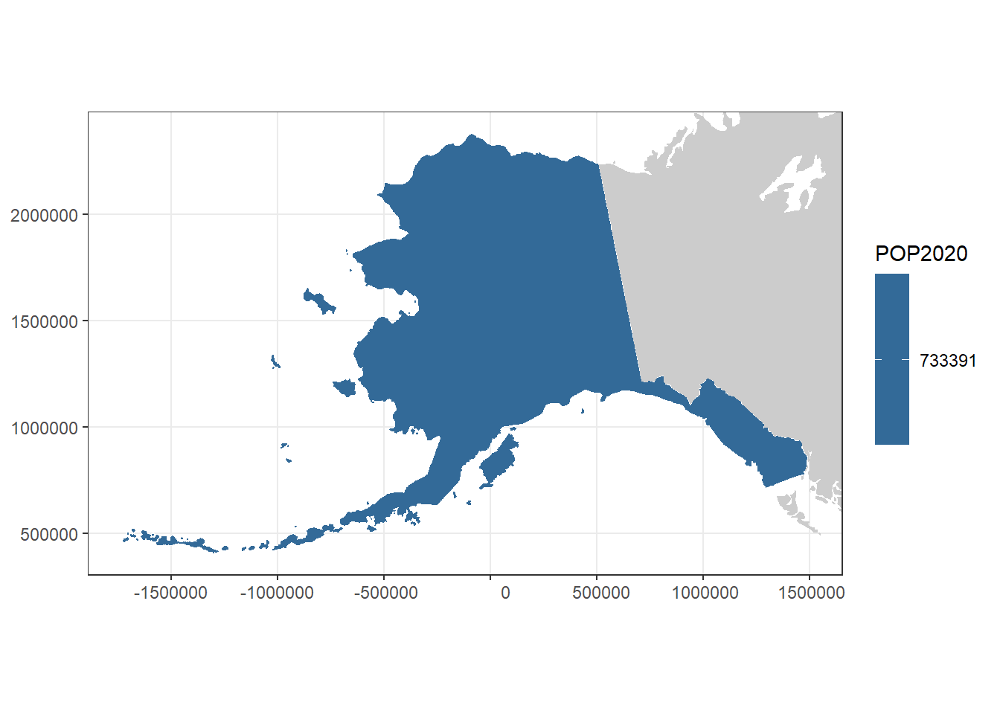
hawaii <- usa %>%
filter(STATE == "Hawaii") %>%
st_transform(st_crs("ESRI:102007"))
hi_plot <- ggplot(hawaii) +
geom_sf(aes(fill = POP2020), col = "white") +
theme_bw() +
xlim(c(st_bbox(hawaii)["xmin"], st_bbox(hawaii)["xmax"])) +
ylim(c(st_bbox(hawaii)["ymin"], st_bbox(hawaii)["ymax"]))
hi_plot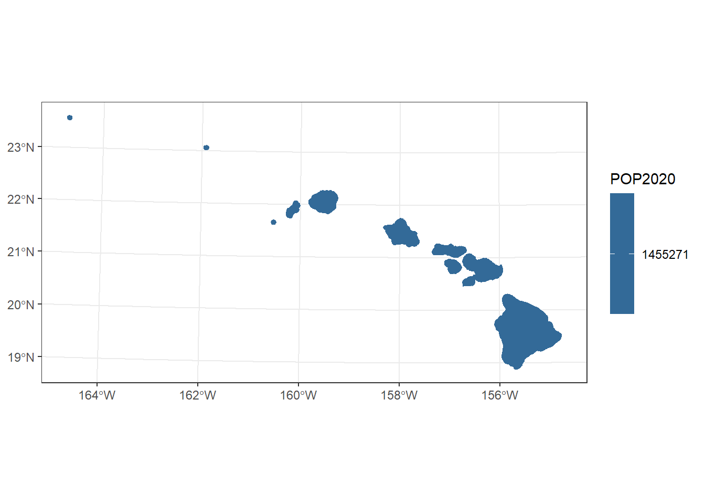
# 'ggdraw' is cowplot's version of 'ggplot'
# 'draw_plot' is cowplot's version of 'geom_sf'
ggdraw() +
draw_plot(us_plot) +
# the x and y arguments tell cowplot where these figures should go on
# the map (based on, I beleive, the bottom left corner)
# The units are in pixels from 0 (bottom/left) to 1 (top/right)
# The 'height' argument tells cowplot how big/small this figure should be
# NOTE: these values are very subjective to your plotting window. If you
# are saving this as a picture file, be sure to check frequently that it looks
# right, because it will likely look different than in your plotting window
# in R studio
draw_plot(ak_plot, x = 0.035, y = 0.75, width = 0.25, height = 0.25) +
draw_plot(hi_plot, x = 0.035, y = 0.015, width = 0.25, height = 0.25)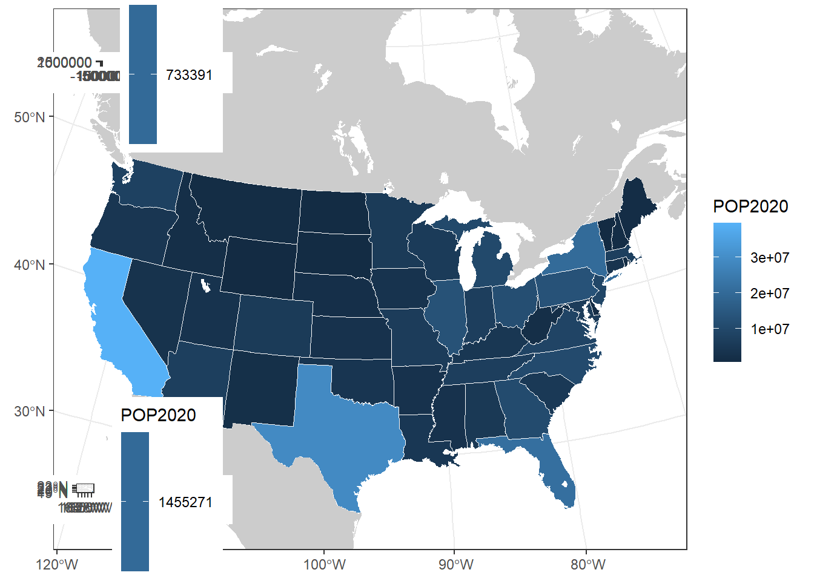
# Right now this doesn't look good. We'll need to remove the legend from the
# Alaska and Hawaii maps. But we also want to be sure that AK and HI's population
# is shown visually on the same scale as the contiguous US (right now they're)
# on their own scales, so the color shown is mis-representing the population# Let's bin the US populations in a way that makes more sense to look at
# 'BAMMtools' has a function for Jenks Breaks, which is a standard way to bin
# continuous values
library(BAMMtools)
(pop_breaks <- getJenksBreaks(var = usa$POP2020, k = 6))## [1] 576851 3605944 7705281 13002700 29145505 39538223## [1] 5.8e+05 3.6e+06 7.7e+06 1.3e+07 2.9e+07 4.0e+07# Add a flag for each state to mark which population bin it should go in
usa <- usa %>%
mutate(POP2020_BREAKS = case_when(
POP2020 >= min(POP2020) & POP2020 < pop_breaks[2] ~ "1",
POP2020 >= pop_breaks[2] & POP2020 < pop_breaks[3] ~ "2",
POP2020 >= pop_breaks[3] & POP2020 < pop_breaks[4] ~ "3",
POP2020 >= pop_breaks[4] & POP2020 < pop_breaks[5] ~ "4",
POP2020 >= pop_breaks[5] & POP2020 <= max(POP2020) ~ "5"))
# Now we've binned population into categories
ggplot(usa) +
geom_sf(aes(fill = POP2020_BREAKS)) 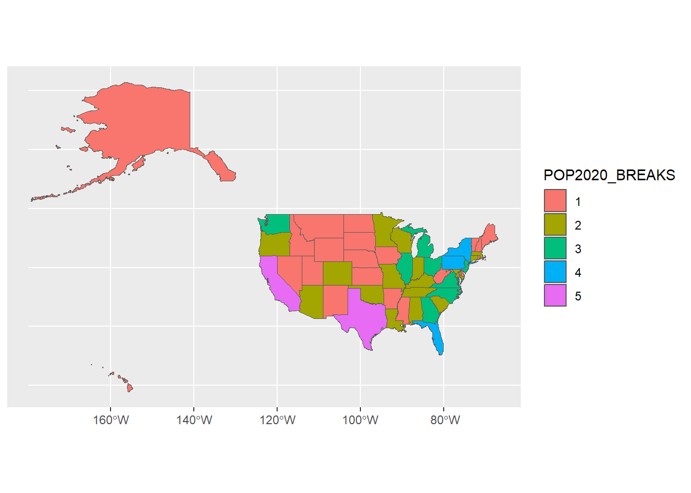
# The base color palette can be a little ugly
# hcl.pals() gives you a list of pre-made palettes, but you could also
# make your own
hcl.pals()## [1] "Pastel 1" "Dark 2" "Dark 3" "Set 2"
## [5] "Set 3" "Warm" "Cold" "Harmonic"
## [9] "Dynamic" "Grays" "Light Grays" "Blues 2"
## [13] "Blues 3" "Purples 2" "Purples 3" "Reds 2"
## [17] "Reds 3" "Greens 2" "Greens 3" "Oslo"
## [21] "Purple-Blue" "Red-Purple" "Red-Blue" "Purple-Orange"
## [25] "Purple-Yellow" "Blue-Yellow" "Green-Yellow" "Red-Yellow"
## [29] "Heat" "Heat 2" "Terrain" "Terrain 2"
## [33] "Viridis" "Plasma" "Inferno" "Rocket"
## [37] "Mako" "Dark Mint" "Mint" "BluGrn"
## [41] "Teal" "TealGrn" "Emrld" "BluYl"
## [45] "ag_GrnYl" "Peach" "PinkYl" "Burg"
## [49] "BurgYl" "RedOr" "OrYel" "Purp"
## [53] "PurpOr" "Sunset" "Magenta" "SunsetDark"
## [57] "ag_Sunset" "BrwnYl" "YlOrRd" "YlOrBr"
## [61] "OrRd" "Oranges" "YlGn" "YlGnBu"
## [65] "Reds" "RdPu" "PuRd" "Purples"
## [69] "PuBuGn" "PuBu" "Greens" "BuGn"
## [73] "GnBu" "BuPu" "Blues" "Lajolla"
## [77] "Turku" "Hawaii" "Batlow" "Blue-Red"
## [81] "Blue-Red 2" "Blue-Red 3" "Red-Green" "Purple-Green"
## [85] "Purple-Brown" "Green-Brown" "Blue-Yellow 2" "Blue-Yellow 3"
## [89] "Green-Orange" "Cyan-Magenta" "Tropic" "Broc"
## [93] "Cork" "Vik" "Berlin" "Lisbon"
## [97] "Tofino" "ArmyRose" "Earth" "Fall"
## [101] "Geyser" "TealRose" "Temps" "PuOr"
## [105] "RdBu" "RdGy" "PiYG" "PRGn"
## [109] "BrBG" "RdYlBu" "RdYlGn" "Spectral"
## [113] "Zissou 1" "Cividis" "Roma"# We'll use the palette 'Emrld' (but you could pick any you like)
pop_cols <- hcl.colors(5, palette = "Emrld")
ggplot(usa) +
geom_sf(aes(fill = POP2020_BREAKS)) +
scale_fill_manual(values = pop_cols,
labels = c(paste(pop_breaks[1], "-", pop_breaks[2]),
paste(pop_breaks[2], "-", pop_breaks[3]),
paste(pop_breaks[3], "-", pop_breaks[4]),
paste(pop_breaks[4], "-", pop_breaks[5]),
paste(pop_breaks[5], "-", pop_breaks[6])))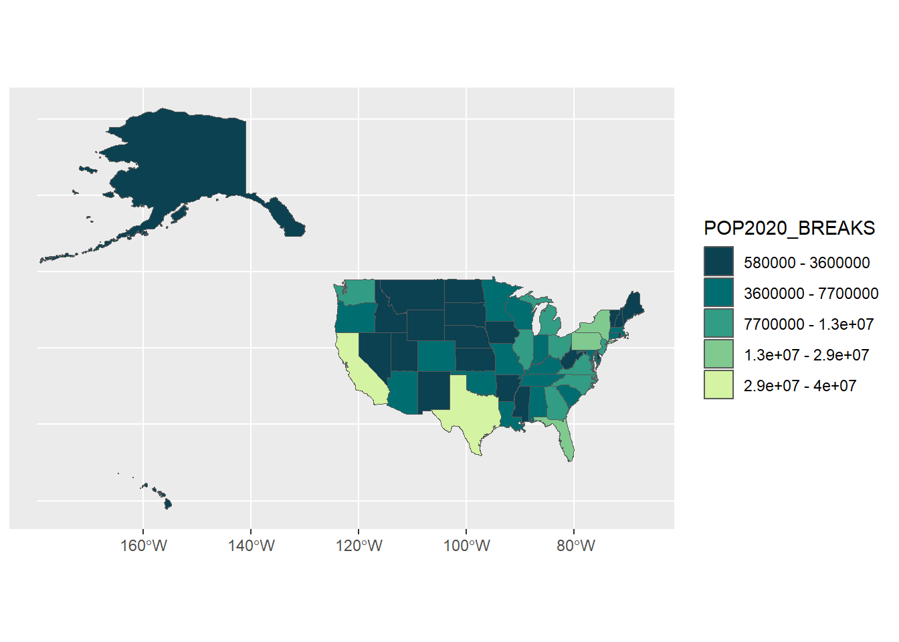
# Let's make the legend label into an object so we don't have to copy-paste
# this everytime we need to plot
pop_breaks_labs <- c(paste(pop_breaks[1], "-", pop_breaks[2]),
paste(pop_breaks[2], "-", pop_breaks[3]),
paste(pop_breaks[3], "-", pop_breaks[4]),
paste(pop_breaks[4], "-", pop_breaks[5]),
paste(pop_breaks[5], "-", pop_breaks[6]))# Let's make the map of the contiguous US as before
# (we need to re-make teh contig_usa object since it doesn't have the population
# breaks attributes)
contig_usa <- usa %>%
filter(!STATE %in% c("Alaska", "Hawaii")) %>%
st_transform(6350)
us_pop_plot <- ggplot() +
geom_sf(aes(fill = POP2020_BREAKS), col = "white",
data = contig_usa) +
geom_sf(data = can_mex, col = NA, fill = "grey80") +
geom_sf(data = na_lakes, fill = "white", col = NA) +
theme_bw() +
xlim(c(st_bbox(contig_usa)["xmin"], st_bbox(contig_usa)["xmax"])) +
ylim(c(st_bbox(contig_usa)["ymin"] - 1e5, st_bbox(contig_usa)["ymax"] + 1e6)) +
scale_fill_manual(values = pop_cols,
labels = pop_breaks_labs)
us_pop_plot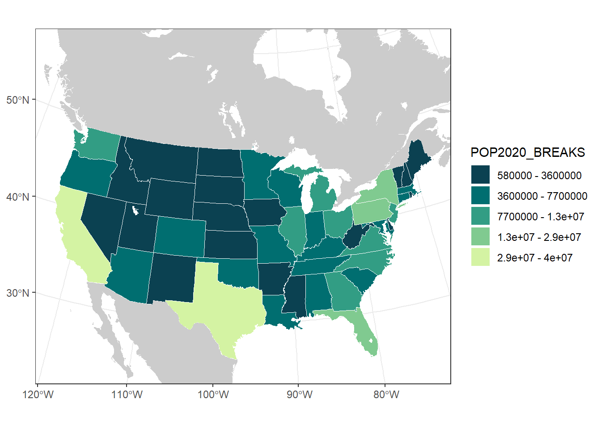
# Let's also remake the AK and HI inset maps
# (AK and HI need to be re-made because they don't have the population breaks
# attributes)
alaska <- usa %>%
filter(STATE == "Alaska") %>%
bind_rows(data.frame(POP2020_BREAKS = as.character(1:5))) %>%
st_transform(3338)
ak_pop_plot <- ggplot() +
geom_sf(aes(fill = POP2020_BREAKS), col = "white",
data = alaska) +
geom_sf(data = can_mex, col = NA, fill = "grey80") +
geom_sf(data = na_lakes, fill = "white", col = NA) +
theme_bw() +
xlim(c(st_bbox(alaska)["xmin"], st_bbox(alaska)["xmax"])) +
ylim(c(st_bbox(alaska)["ymin"], st_bbox(alaska)["ymax"])) +
coord_sf(datum = 3338) +
scale_fill_manual(values = pop_cols,
labels = pop_breaks_labs)
ak_pop_plot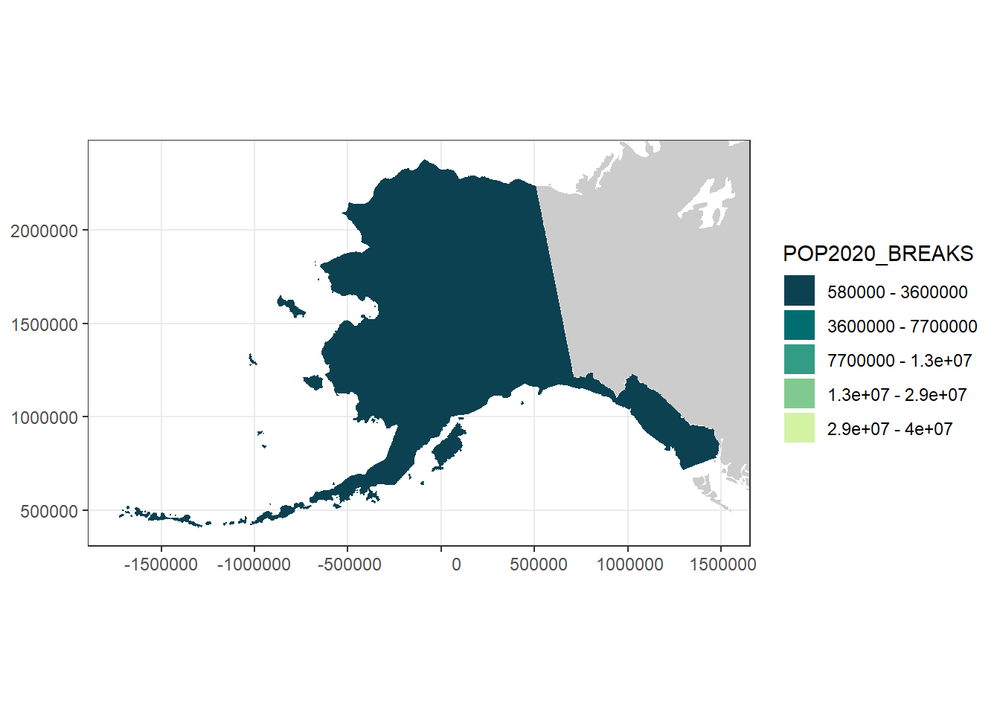
hawaii <- usa %>%
filter(STATE == "Hawaii") %>%
st_transform(st_crs("ESRI:102007")) %>%
bind_rows(data.frame(POP2020_BREAKS = as.character(1:5)))
hi_pop_plot <- ggplot() +
geom_sf(aes(fill = POP2020_BREAKS), col = "white",
data = hawaii) +
theme_bw() +
xlim(c(st_bbox(hawaii)["xmin"], st_bbox(hawaii)["xmax"])) +
ylim(c(st_bbox(hawaii)["ymin"], st_bbox(hawaii)["ymax"])) +
scale_fill_manual(values = pop_cols,
labels = pop_breaks_labs)
hi_pop_plot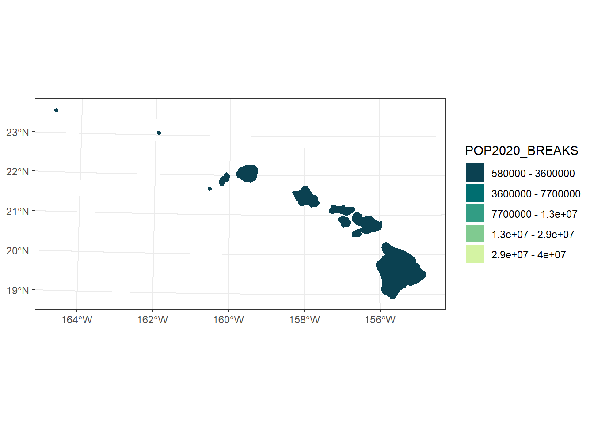
# Now add everything together
us_pop_map <- ggdraw() +
draw_plot(us_pop_plot + labs(fill = "Population")) +
# legend.position = 'none' removes the legend
draw_plot(ak_pop_plot + theme(legend.position = 'none',
axis.text = element_blank(),
axis.ticks = element_blank(),
plot.background = element_blank()),
x = 0.0375, y = 0.707, width = 0.25, height = 0.25) +
draw_plot(hi_pop_plot + theme(legend.position = 'none',
axis.text = element_blank(),
axis.ticks = element_blank(),
plot.background = element_blank()),
x = 0.0375, y = 0.0351, width = 0.2, height = 0.25)us_pop_map
# Reminder that the xy and width/height for cowplot plots are very subjective,
# So you'll have to check and adjust for your viewing window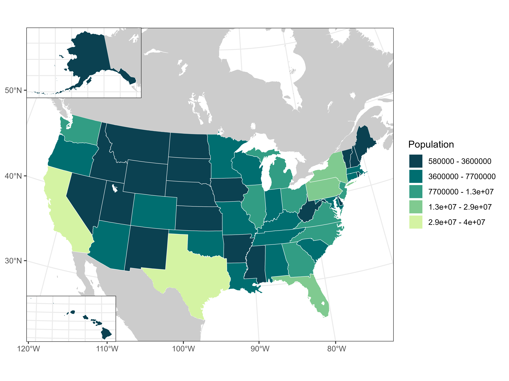
5.1.1 Change in Population
For the last plot we visually showed the current US population with colors We can also visually convey information through points and their size For this plot, let’s combine the two to create a map showwing the current US population and it’s change from the last census count
## Simple feature collection with 6 features and 6 fields
## Geometry type: MULTIPOLYGON
## Dimension: XY
## Bounding box: xmin: -124.3834 ymin: 30.24071 xmax: -71.78015 ymax: 42.04937
## Geodetic CRS: WGS 84
## STATE POP2020 POP2010 DIVISION REGION
## 1 Alabama 5024279 4779736 East South Central South
## 2 Arizona 7151502 6392017 Mountain West
## 3 Arkansas 3011524 2915918 West South Central South
## 4 California 39538223 37253956 Pacific West
## 5 Colorado 5773714 5029196 Mountain West
## 6 Connecticut 3605944 3574097 New England Northeast
## geometry POP2020_BREAKS
## 1 MULTIPOLYGON (((-87.46201 3... 2
## 2 MULTIPOLYGON (((-114.6374 3... 2
## 3 MULTIPOLYGON (((-94.05103 3... 1
## 4 MULTIPOLYGON (((-120.006 42... 5
## 5 MULTIPOLYGON (((-102.0552 4... 2
## 6 MULTIPOLYGON (((-73.49902 4... 2usa <- usa %>%
mutate(pop_perc_change = ((POP2020 - POP2010)/POP2010) * 100)
summary(usa$pop_perc_change)## Min. 1st Qu. Median Mean 3rd Qu. Max.
## -3.199 2.902 5.654 7.018 10.410 18.370# Plot just to check what it looks like. Reminder that our final plot will
# have the color-coded current population (the previous map) and the percent
# change in population represented by different size points
ggplot(usa) +
geom_sf(aes(fill = pop_perc_change))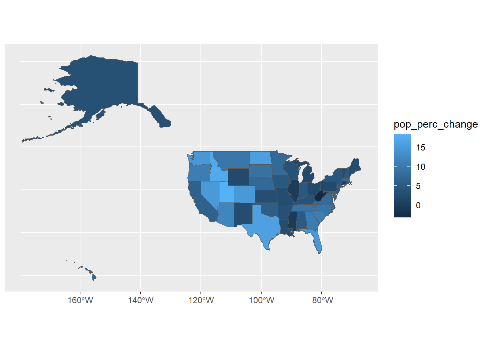
# Find the centeroid of each state for the point to fall on
state_center <- st_centroid(usa)
ggplot(usa) +
geom_sf(data = usa) +
geom_sf(data = state_center)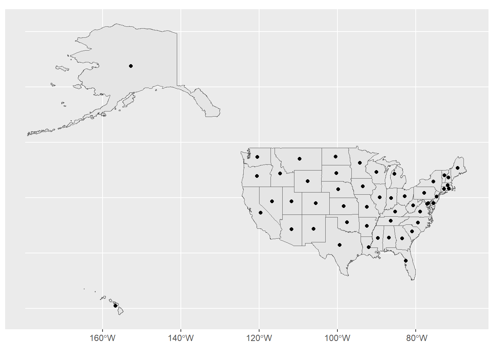
# Show the percent change in population based on the point size
ggplot(usa) +
geom_sf(data = usa) +
geom_sf(data = state_center,
aes(size = pop_perc_change))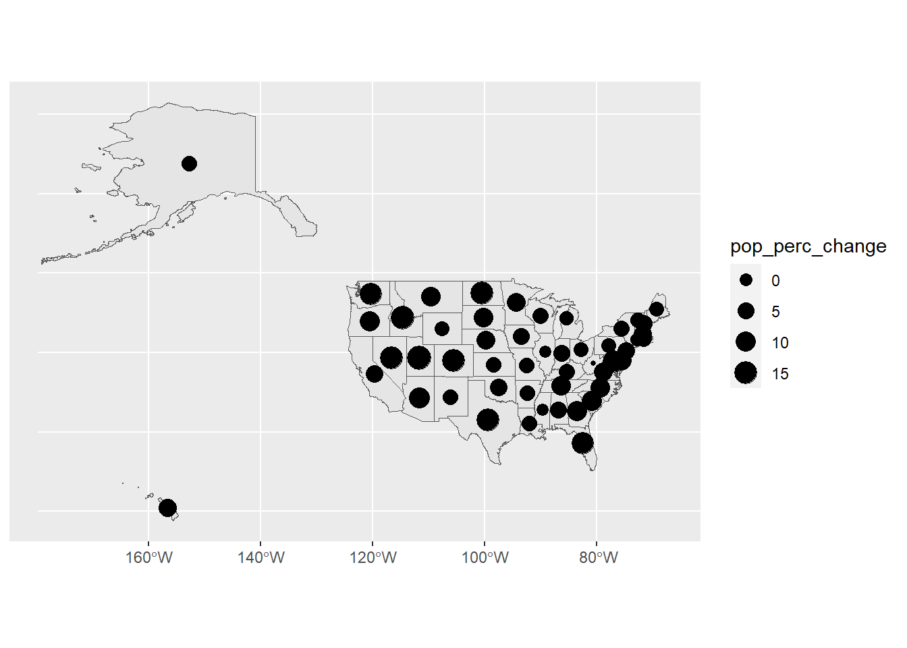
# Put the percent change into bins
(pop_change_breaks <- getJenksBreaks(var = usa$pop_perc_change, k = 4))## [1] -3.199039 5.654072 11.881774 18.370193# There are some negative percent change values (ie the population decreased)
# So let's filter out the negative changes
# (If a state had negative population growth, we will just mark that it was
# less than 0)
pop_change_grtr_0 <- filter(usa, pop_perc_change > 0)$pop_perc_change
summary(pop_change_grtr_0)## Min. 1st Qu. Median Mean 3rd Qu. Max.
## 0.8911 3.2743 6.5566 7.5301 10.5802 18.3702## [1] 0.8910502 6.1316092 11.8817738 18.3701927# Mark which bin the state should fall in based on its change in population
state_center <- state_center %>%
mutate(pop_perc_change_breaks = case_when(
pop_perc_change <= 0 ~ "1",
pop_perc_change >= pop_change_breaks[1] & pop_perc_change < pop_change_breaks[2] ~ "2",
pop_perc_change >= pop_change_breaks[2] & pop_perc_change < pop_change_breaks[3] ~ "3",
pop_perc_change >= pop_change_breaks[3] & pop_perc_change <= pop_change_breaks[4] ~ "4"))
head(state_center)## Simple feature collection with 6 features and 8 fields
## Geometry type: POINT
## Dimension: XY
## Bounding box: xmin: -119.6015 ymin: 32.80316 xmax: -72.72598 ymax: 41.62566
## Geodetic CRS: WGS 84
## STATE POP2020 POP2010 DIVISION REGION
## 1 Alabama 5024279 4779736 East South Central South
## 2 Arizona 7151502 6392017 Mountain West
## 3 Arkansas 3011524 2915918 West South Central South
## 4 California 39538223 37253956 Pacific West
## 5 Colorado 5773714 5029196 Mountain West
## 6 Connecticut 3605944 3574097 New England Northeast
## geometry POP2020_BREAKS pop_perc_change
## 1 POINT (-86.83042 32.80316) 2 5.1162449
## 2 POINT (-111.6679 34.3006) 2 11.8817738
## 3 POINT (-92.44013 34.90418) 1 3.2787616
## 4 POINT (-119.6015 37.26901) 5 6.1316092
## 5 POINT (-105.5525 38.99797) 2 14.8039170
## 6 POINT (-72.72598 41.62566) 2 0.8910502
## pop_perc_change_breaks
## 1 2
## 2 4
## 3 2
## 4 3
## 5 4
## 6 2# Check map
ggplot(usa) +
geom_sf(data = usa) +
geom_sf(data = state_center,
aes(size = pop_perc_change_breaks))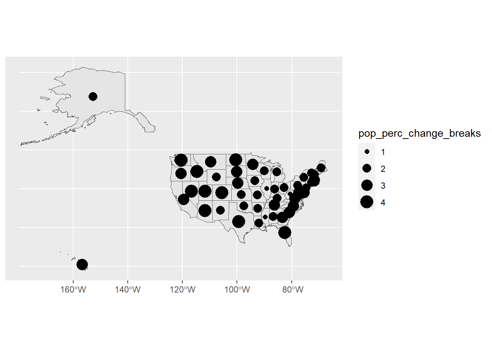
# Let's manually adjust the sizes to be more clear how the sizes differentiate
ggplot(usa) +
geom_sf(data = usa) +
geom_sf(data = state_center,
aes(size = pop_perc_change_breaks)) +
scale_size_manual(values = seq(1, 8, by = 2))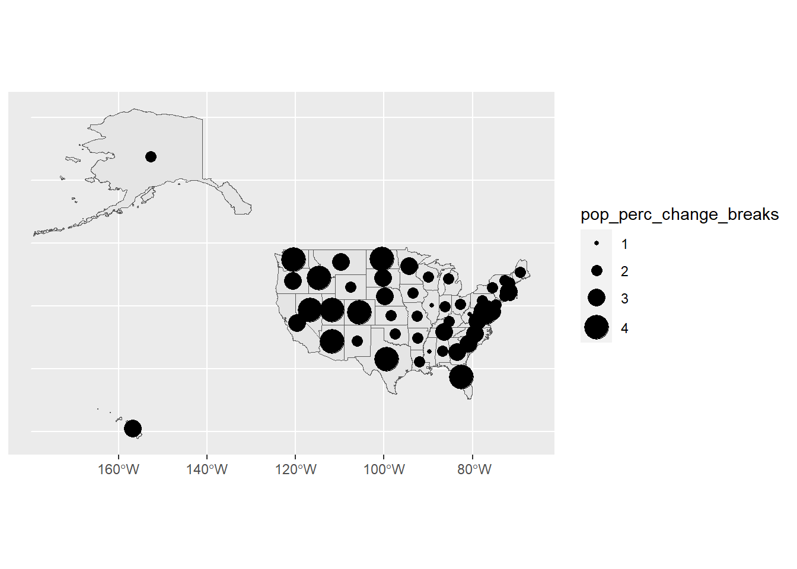
# Now let's set up state_center like we did with the states themselves
# ie filter out AK and HI to make the contiguous USA and AK & HI into their own
# objects
contig_state_center <- state_center %>%
filter(!STATE %in% c("Alaska", "Hawaii")) %>%
st_transform(6350)
us_pop_plot +
geom_sf(aes(size = pop_perc_change_breaks),
data = contig_state_center) +
scale_size_manual(values = seq(1, 8, by = 2)) 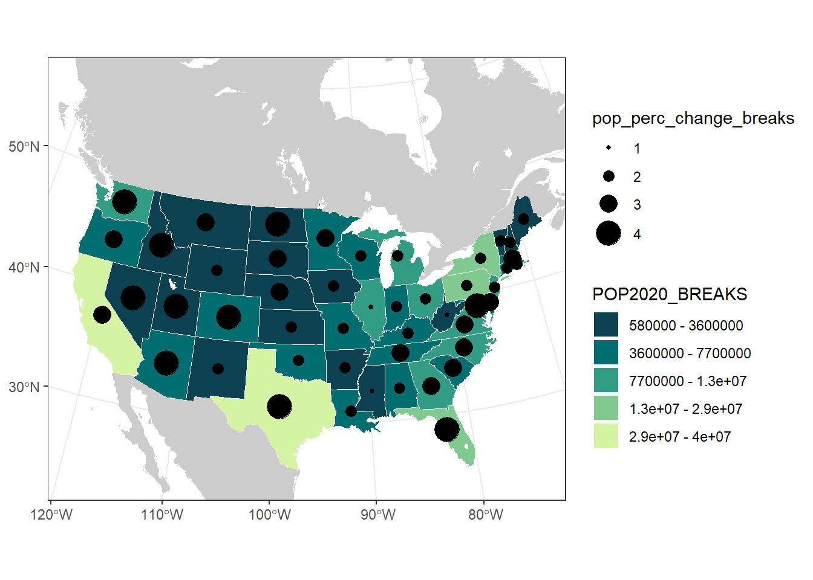
# Make labels for the percent change legend
(pop_change_breaks_labs <- signif(pop_change_breaks, 1))## [1] 0.9 6.0 10.0 20.0## [1] -3.199039(pop_change_labs <- c(paste0("-3% - ", pop_change_breaks_labs[1], "%"),
paste0(pop_change_breaks_labs[1], "% - ", pop_change_breaks_labs[2], "%"),
paste0(pop_change_breaks_labs[2], "% - ", pop_change_breaks_labs[3], "%"),
paste0(pop_change_breaks_labs[3], "% - ", pop_change_breaks_labs[4], "%")))## [1] "-3% - 0.9%" "0.9% - 6%" "6% - 10%" "10% - 20%"us_pop_change_plot <- us_pop_plot +
geom_sf(aes(size = pop_perc_change_breaks),
data = contig_state_center) +
scale_size_manual(values = seq(0.5, 6, length.out = 4),
labels = pop_change_labs)
us_pop_change_plot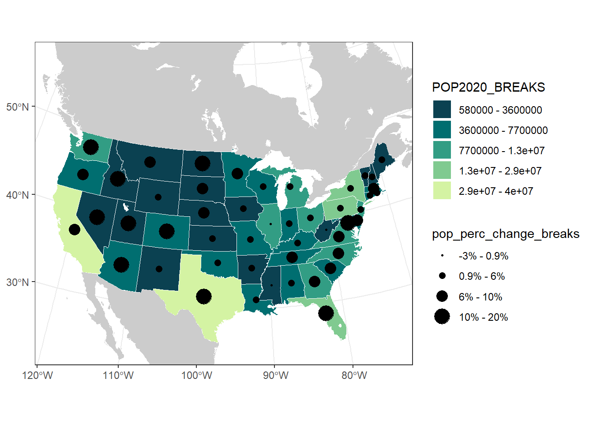
# Repeat for AK & HI
ak_center <- state_center %>%
filter(STATE == "Alaska") %>%
bind_rows(data.frame(pop_perc_change_breaks = as.character(1:4))) %>%
st_transform(3338)
ak_pop_change_plot <- ak_pop_plot +
geom_sf(aes(size = pop_perc_change_breaks),
data = ak_center) +
scale_size_manual(values = seq(1, 8, by = 2))
ak_pop_change_plot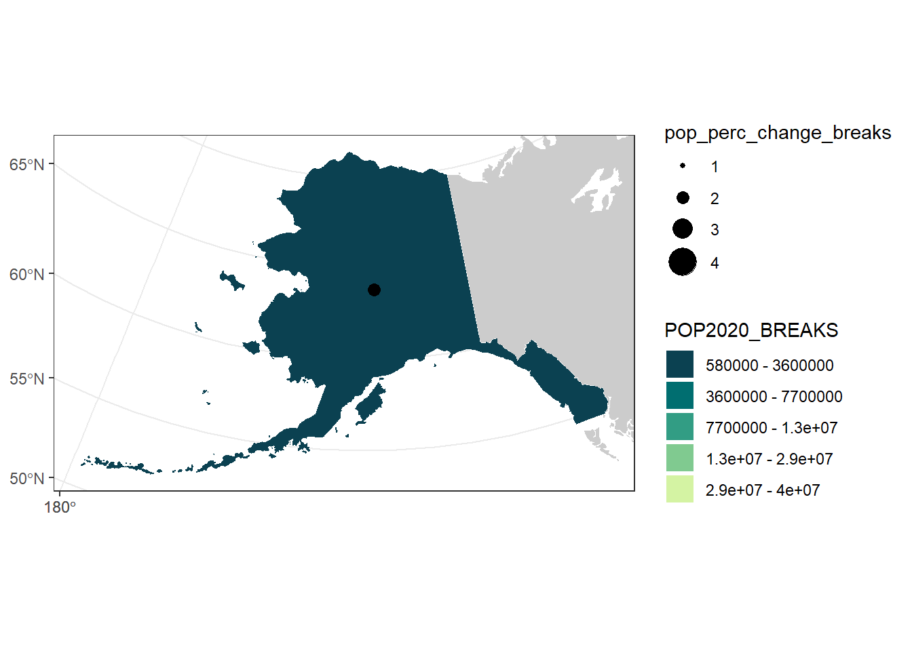
hi_center <- state_center %>%
filter(STATE == "Hawaii") %>%
bind_rows(data.frame(pop_perc_change_breaks = as.character(1:4))) %>%
st_transform(st_crs("ESRI:102007"))
hi_pop_change_plot <- hi_pop_plot +
geom_sf(aes(size = pop_perc_change_breaks),
data = hi_center) +
scale_size_manual(values = seq(1, 8, by = 2))
hi_pop_change_plot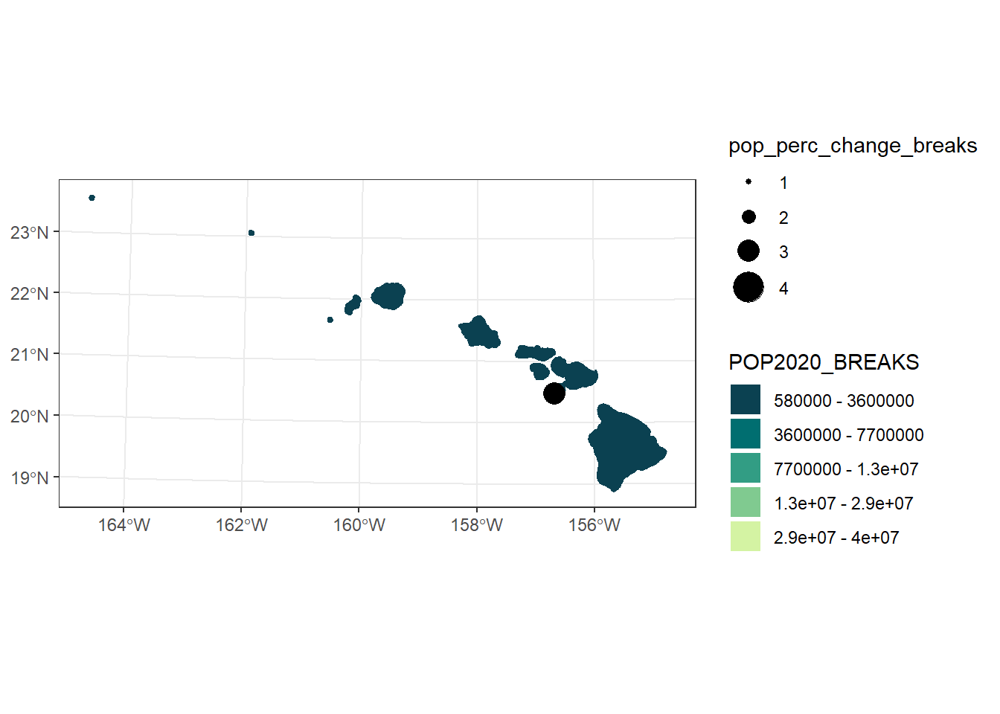
# Add everything together
us_pop_change_map <- ggdraw() +
draw_plot(us_pop_change_plot + labs(fill = "Population",
size = "Percent Population Change from 2010")) +
draw_plot(ak_pop_change_plot + theme(legend.position = 'none',
axis.text = element_blank(),
axis.ticks = element_blank(),
plot.background = element_blank()),
x = 0.03, y = 0.65, width = 0.25, height = 0.25) +
draw_plot(hi_pop_change_plot + theme(legend.position = 'none',
axis.text = element_blank(),
axis.ticks = element_blank(),
plot.background = element_blank()),
x = 0.03, y = 0.089, width = 0.2, height = 0.25)
## used (Mb) gc trigger (Mb) max used (Mb)
## Ncells 2289154 122.3 5164352 275.9 5164352 275.9
## Vcells 4245834 32.4 120616605 920.3 123931763 945.65.2 Yellowstone
Let’s make a map of species and their general distribution within Yellowstone
ynp <- st_read("Data/Visualization/Yellowstone", quiet = T) %>%
# be sure it's projected to WGS 84 (EPSG:4326)
st_transform(4326)
# Check that everything looks right
head(ynp)## Simple feature collection with 1 feature and 13 fields
## Geometry type: POLYGON
## Dimension: XY
## Bounding box: xmin: -111.1543 ymin: 44.13245 xmax: -109.8339 ymax: 45.10785
## Geodetic CRS: WGS 84
## AREA PERIMETER AB67_ AB67_ID TYPE1 ADMN_TYPE1 TYPE2
## 1 8842796032 447129.5 2 649 1 Park, monument, etc. 0
## ADMN_TYPE2 TYPE3 ADMN_TYPE3 STATE_FIPS STATE_NAME SUB_REGION
## 1 <NA> 0 <NA> 56 Wyoming Mtn
## geometry
## 1 POLYGON ((-110.0112 45.0478...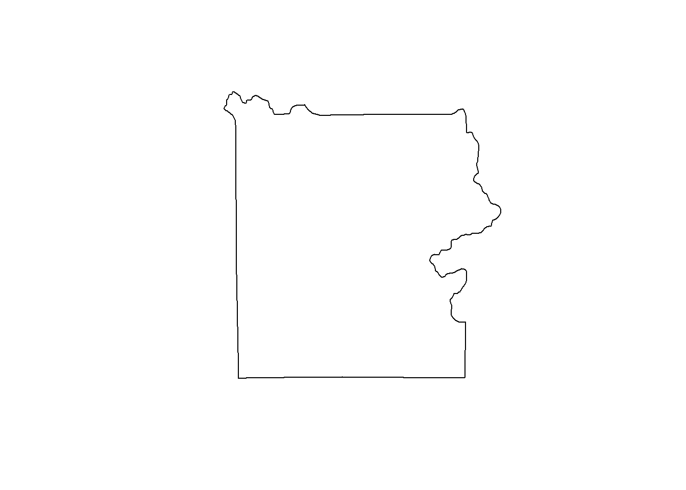
# Load the GPS locations of four different species of wildlife in Yellowstone
ynp_animals <- read.csv("Data/Visualization/yellowstone_animals.csv")
ggplot() +
geom_sf() +
geom_sf(data = ynp) +
# add the GPS points to the maps, color based on the species
geom_point(aes(x = Longitude, y = Latitude, col = Species),
data = ynp_animals)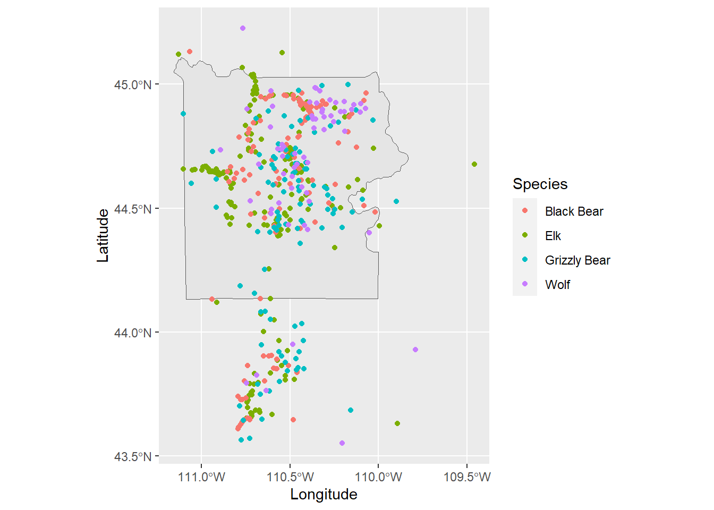
# Load the ranges of the wildlife
range <- st_read("Data/Visualization/Species_Range", quiet = T)
# The attribute 'level' indicates more (smaller percentages) or less (higher percentages) intensely used spaces
head(range)## Simple feature collection with 6 features and 2 fields
## Geometry type: MULTIPOLYGON
## Dimension: XY
## Bounding box: xmin: -111.1123 ymin: 43.30636 xmax: -109.8502 ymax: 45.31349
## Geodetic CRS: WGS 84
## Use Species geometry
## 1 0.00000000 Black Bear MULTIPOLYGON (((-110.5497 4...
## 2 0.04545455 Black Bear MULTIPOLYGON (((-110.504 45...
## 3 0.09090910 Black Bear MULTIPOLYGON (((-110.4584 4...
## 4 0.13636364 Black Bear MULTIPOLYGON (((-110.504 45...
## 5 0.18181819 Black Bear MULTIPOLYGON (((-110.4584 4...
## 6 0.22727274 Black Bear MULTIPOLYGON (((-110.5192 4...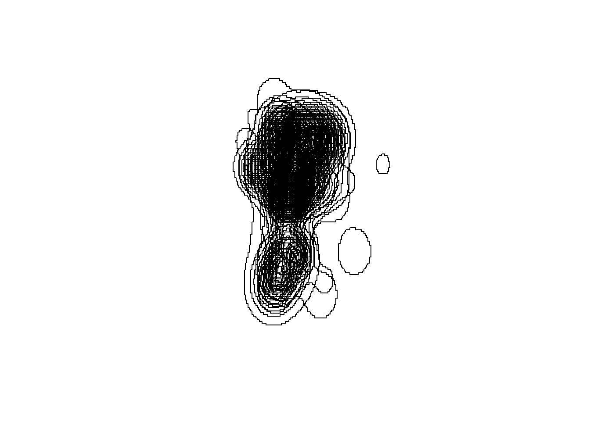
# Add the ranges to the yellowstone
ynp_plot <- ggplot() +
# change the linetype to dotted
geom_sf(data = ynp, linetype = 2, linewidth = 1) +
# add the ranges to the map, fill color based on the intesnity of use
geom_sf(aes(fill = Use), col = NA, alpha = 0.5,
data = range) +
geom_point(aes(x = Longitude, y = Latitude, col = Species),
data = ynp_animals, alpha = 0.5) +
# Give an outline to the points
# (Note: this can also be done by changing the shape type to '21',
# which gives a point a fill and a color.
# The reason why I don't have that here is because the fill colors for the
# species ranges and points would be the same, and we want to give them
# different color palettes)
geom_point(aes(x = Longitude, y = Latitude), data = ynp_animals,
shape = 21, col = "grey30", alpha = 0.5)
ynp_plot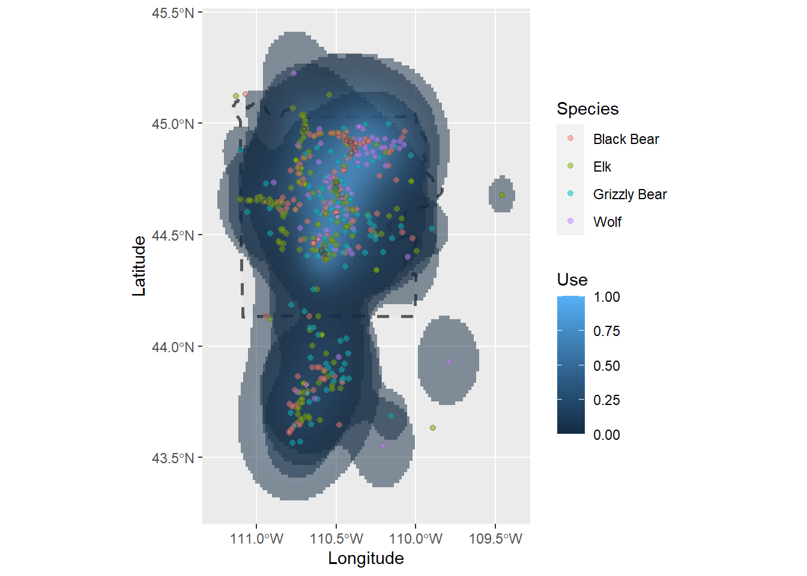
# Right now all the GPS points and ranges are on top of each other in one plot
# So it's difficult to see what's happening
ynp_plot <- ynp_plot +
# facet_wrap creates different facets of the figure (in this case based on the species)
facet_wrap(~Species, nrow = 2, ncol = 2)
ynp_plot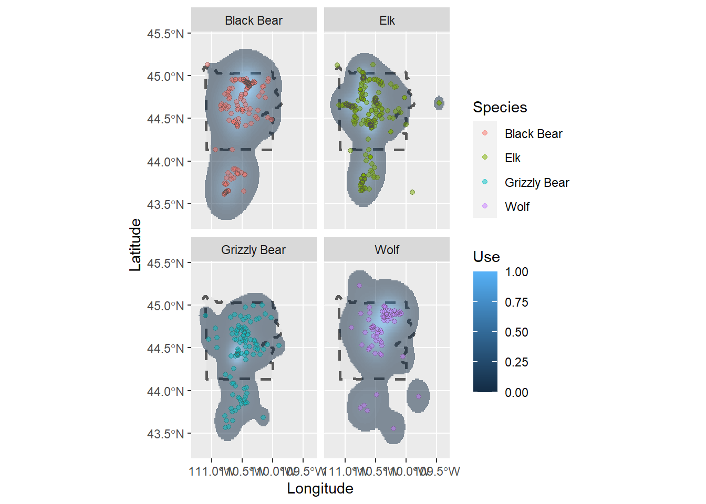
This plot is more clear. Let’s change the colors of the species points
# We'll use the palette "Green-Brown" for the animal points
animal_cols <- hcl.colors(n = 4, palette = "Green-Brown")
names(animal_cols) <- unique(ynp_animals$Species)
animal_cols## Elk Black Bear Grizzly Bear Wolf
## "#004B40" "#89D9CF" "#E4C6A1" "#533600"ynp_plot <- ynp_plot +
# We could pick another palette for the ranges, or we could use a built-in viridis palette
scale_fill_viridis_c(option = "B") +
scale_color_manual(values = animal_cols) +
theme_bw()
ynp_plot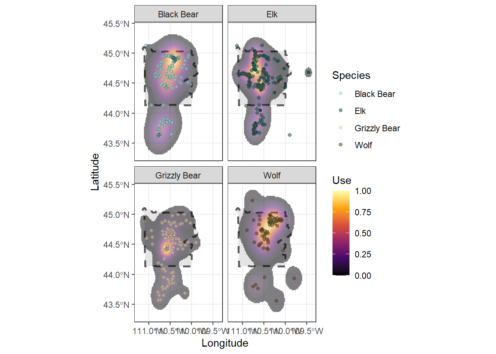
# Finally, let's adjust the x-coordinate labels, since they're printing on top of each other
x_min <- signif(min(ynp_animals$Longitude), 3)
x_max <- signif(max(ynp_animals$Longitude), 3)
seq(x_min, x_max, by = 1)## [1] -111 -110 -109ynp_plot <- ynp_plot +
scale_x_continuous(breaks = seq(x_min, x_max, by = 1)) +
labs(x = "", y = "", fill = "Intensity of Use")
ynp_plot 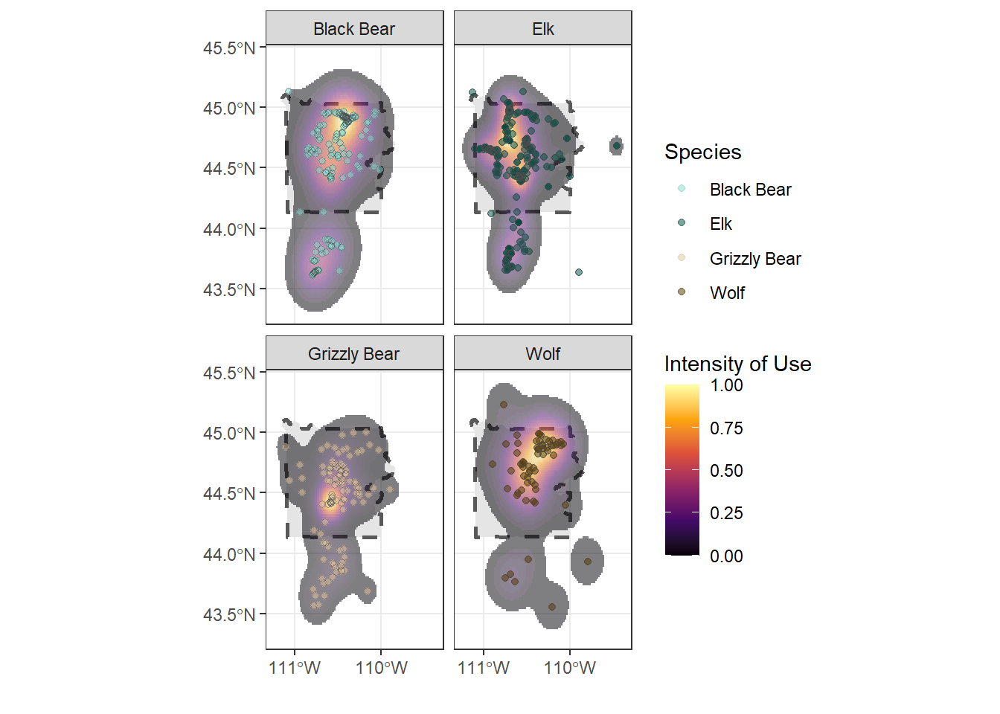
5.2.1 Hillshade
This plot is fine. But if we wanted, we could make the background a bit more interesting. Let’s add a hillshade, or an elevation raster that adds a shadow effect to look 3D
# Load the DEM (Digital Elevation Model)
# We will derive everything from this raster to create the hillshade raster
ynp_dem <- rast("Data/Visualization/Yellowstone_DEM.tif")
# Check
ynp_dem## class : SpatRaster
## dimensions : 783, 781, 1 (nrow, ncol, nlyr)
## resolution : 0.002777778, 0.002777778 (x, y)
## extent : -111.3775, -109.2081, 43.30056, 45.47556 (xmin, xmax, ymin, ymax)
## coord. ref. : lon/lat NAD83 (EPSG:4269)
## source : Yellowstone_DEM.tif
## name : DEM
## min value : 1291.389
## max value : 4047.209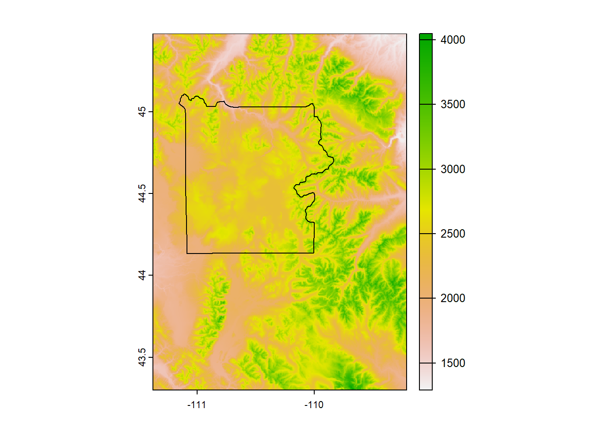
# To create a hillshade, we need both slope and aspect
# which can be derived using the function 'terrain'
ynp_slope <- terrain(ynp_dem, v = "slope", unit = "radians")
ynp_aspect <- terrain(ynp_dem, v = "aspect", unit = "radians")
# Now derive hillshade
ynp_hillshade <- shade(ynp_slope, ynp_aspect)
ynp_hillshade## class : SpatRaster
## dimensions : 783, 781, 1 (nrow, ncol, nlyr)
## resolution : 0.002777778, 0.002777778 (x, y)
## extent : -111.3775, -109.2081, 43.30056, 45.47556 (xmin, xmax, ymin, ymax)
## coord. ref. : lon/lat NAD83 (EPSG:4269)
## source(s) : memory
## name : hillshade
## min value : -0.04331134
## max value : 0.99961031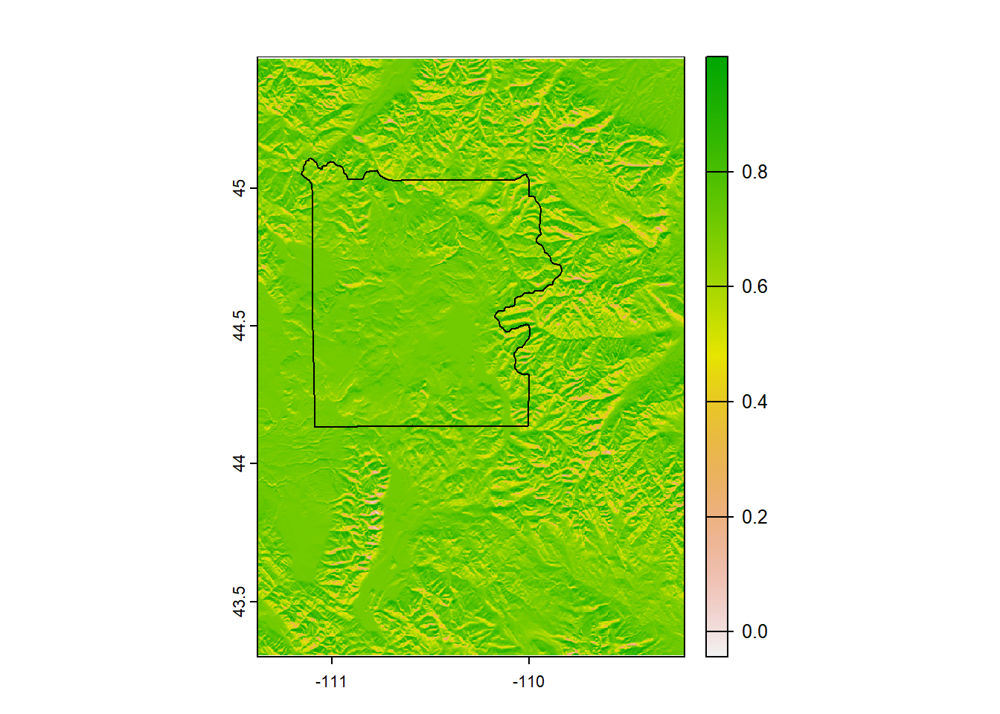
# We need to turn the raster into a dataframe so that ggplot can handle it
names(ynp_hillshade) <- "hillshade"
ynp_hill_df <- as.data.frame(ynp_hillshade, xy = T)
head(ynp_hill_df)## x y hillshade
## 783 -111.3733 45.47139 0.7732976
## 784 -111.3706 45.47139 0.7462534
## 785 -111.3678 45.47139 0.7070008
## 786 -111.3650 45.47139 0.6975097
## 787 -111.3622 45.47139 0.7025581
## 788 -111.3594 45.47139 0.7414129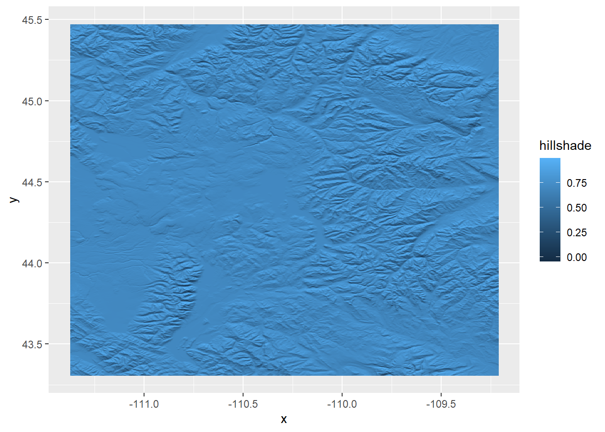
When we plot the hillshade raster with other spatial objects, ggplot is able to tell that the raster is a spatial object too, and plots it with the correct projection
ggplot() +
geom_raster(data = ynp_hill_df,
aes(x = x, y = y, fill = hillshade)) +
geom_sf(data = ynp, linetype = 2, linewidth = 1, fill = NA) +
scale_x_continuous(breaks = seq(x_min, x_max, by = 1))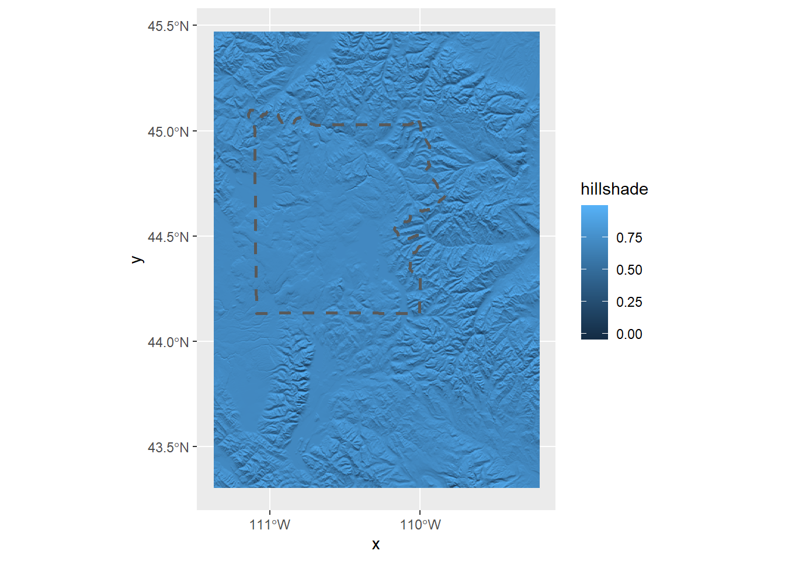
Right now we can’t see anything, so let’s adjust the hillshade colors
ynp_plot <- ggplot() +
geom_raster(data = ynp_hill_df,
aes(x = x, y = y, fill = hillshade),
show.legend = FALSE) + # remove hillshade legend
# Let's change the hillshade to a greyscale gradient
scale_fill_gradient2("hillshade_lower_res",
low = "grey0", mid = "grey0", high = "grey100",
na.value = "transparent") +
geom_sf(data = ynp, linetype = 2, linewidth = 1, fill = NA, col = "white") +
scale_x_continuous(breaks = seq(x_min, x_max, by = 1))
ynp_plot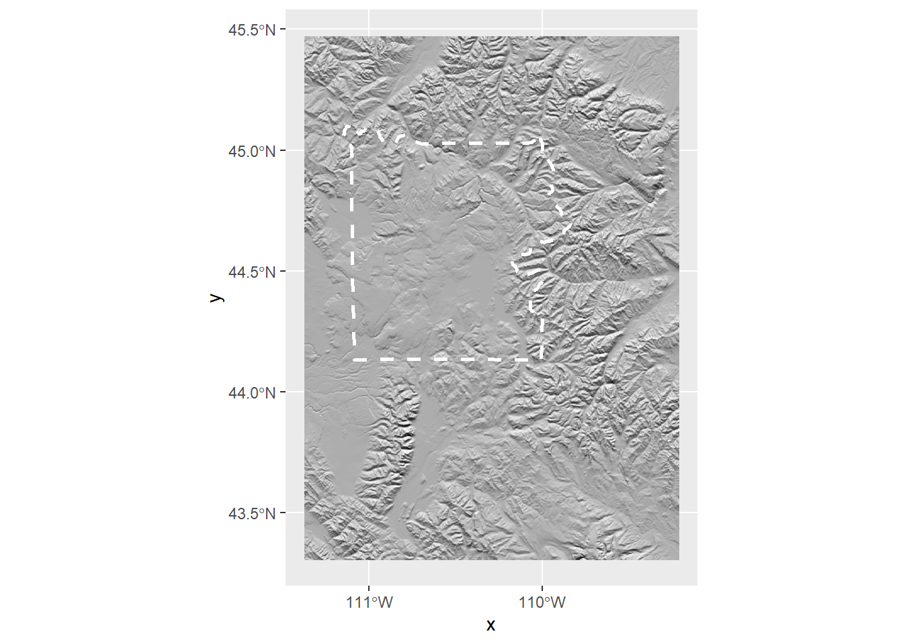
Neat!
Now let’s add the animal data back to the map
ynp_plot +
geom_sf(aes(fill = Use), col = NA, alpha = 0.5,
data = range) +
geom_point(aes(x = Longitude, y = Latitude, col = Species),
data = ynp_animals, alpha = 0.5) +
geom_point(aes(x = Longitude, y = Latitude), data = ynp_animals,
shape = 21, col = "grey30", alpha = 0.5) +
scale_fill_viridis_c(option = "B") +
scale_color_manual(values = animal_cols) +
facet_wrap(~Species, nrow = 2, ncol = 2) +
theme_bw()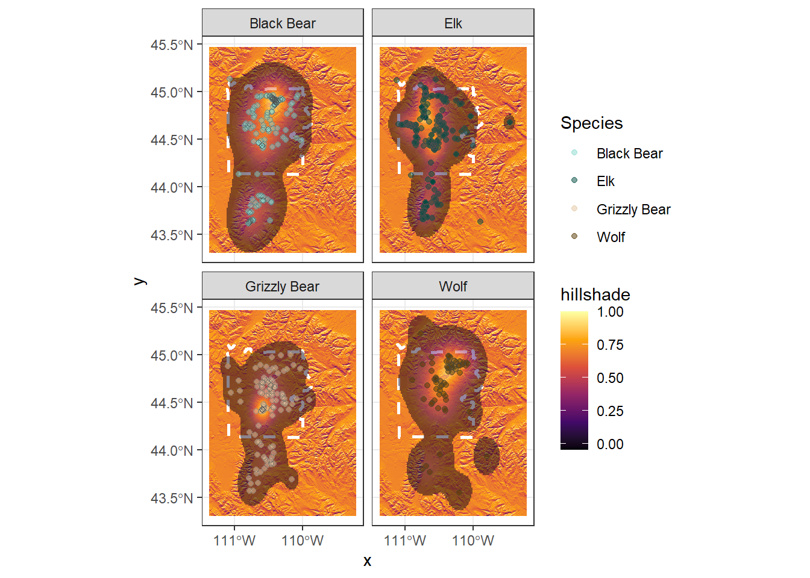
Oops, ggplot as a default can’t handle more than one palette for ‘fill’ so it changed the hillshade to the same gradient as the animal ranges.
To fix this, we can use the package ggnewscale
library(ggnewscale)
ynp_plot <- ynp_plot +
new_scale("fill") + # let's you add a new fill scale
geom_sf(aes(fill = Use), col = NA, alpha = 0.5,
data = range) +
geom_point(aes(x = Longitude, y = Latitude, col = Species),
data = ynp_animals, alpha = 0.5) +
geom_point(aes(x = Longitude, y = Latitude), data = ynp_animals,
shape = 21, col = "grey30", alpha = 0.5) +
scale_fill_viridis_c(option = "B") +
scale_color_manual(values = animal_cols) +
facet_wrap(~Species, nrow = 2, ncol = 2) +
theme_bw() +
labs(x = "", y = "", fill = "Intensity of Use")
ynp_plot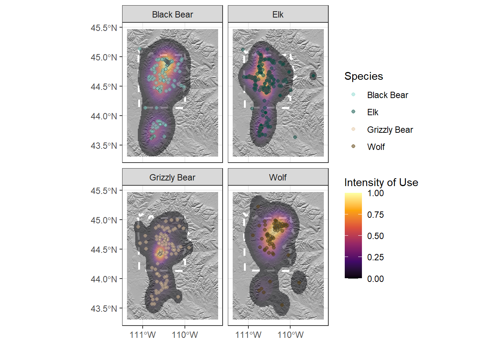
Yay!
5.2.2 Inset
Let’s add an inset map so we know where in the US Yellowstone is located
# Let's make a map of the contiguous US with Yellowstone
us_inset <- ggplot() +
geom_sf(data = contig_usa, col = "white", fill = "grey") +
geom_sf(data = ynp) +
# this theme option voids out all backgrounds and labels
theme_void()
us_inset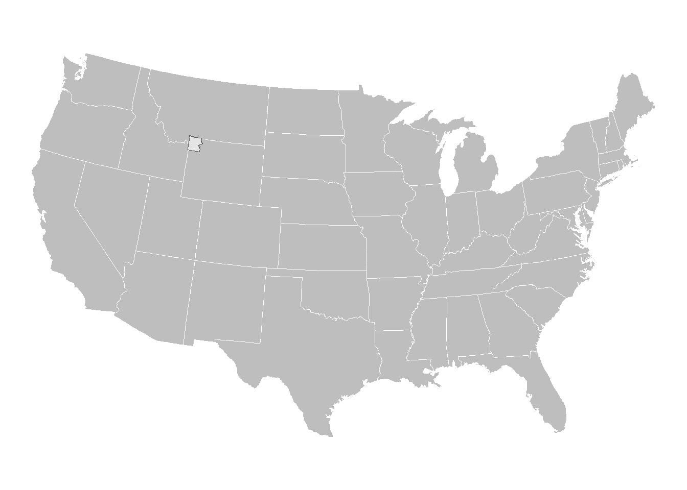
# Cowplot both plots together
check_ynp <- ggdraw() +
draw_plot(ynp_plot) +
draw_plot(us_inset,
x = 0.675, y = 0.05, width = 0.2, height = 0.2)
Right now, it’s not immediately clear where Yellowstone is so let’s make the outline red
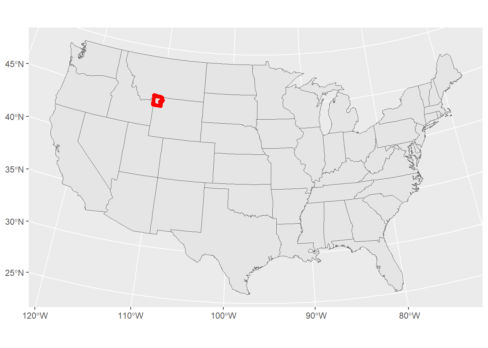
This works fine, but maybe we want to make a red box around the general area where Yellowstone is located
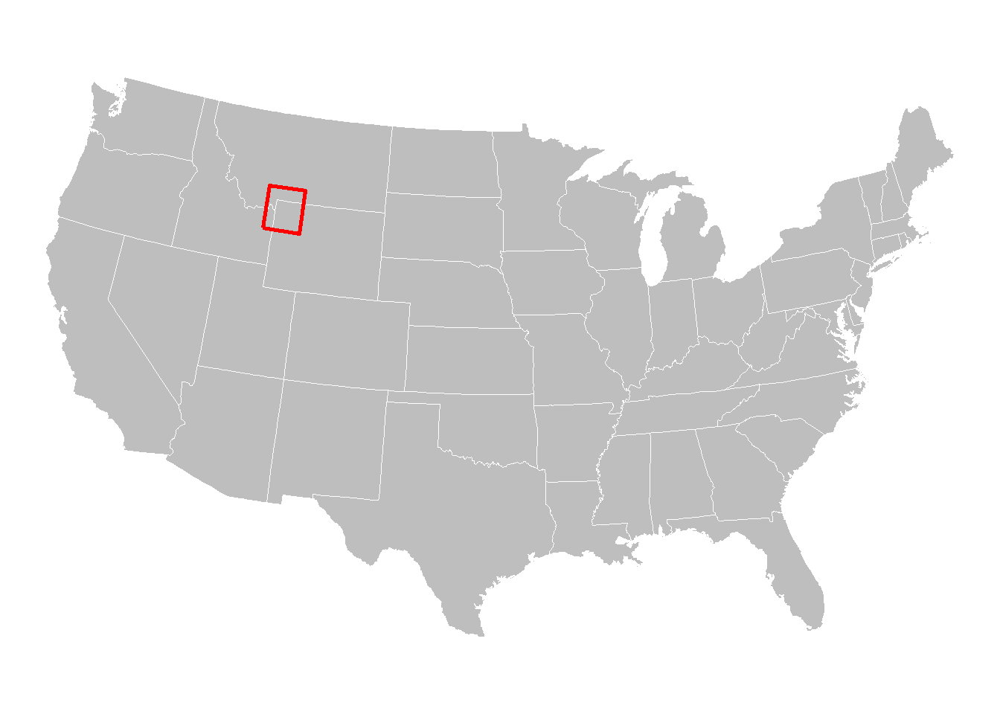
# Now we have a map of yellowstone and where it's located
# (We could also adjust the inset map's location if needed)
ynp_map <- ggdraw() +
draw_plot(ynp_plot) +
draw_plot(us_inset,
x = 0.675, y = 0.05, width = 0.2, height = 0.2)
## used (Mb) gc trigger (Mb) max used (Mb)
## Ncells 2314503 123.7 8141852 434.9 10224004 546.1
## Vcells 10390425 79.3 149906776 1143.7 156086225 1190.95.3 Landcover
Let’s make a landcover map of the ecorgions in the Four Corners and adjust colors that make sense to the landcover type
# Load the boundaries of different landcover types within the Four Corners
regions <- st_read("Data/Visualization/Landcover/Regions") %>%
st_transform(st_crs(contig_usa))## Reading layer `Regions' from data source
## `C:\Users\RonanHart\Documents\Projects\R_Spatial_Workshop\Data\Visualization\Landcover\Regions'
## using driver `ESRI Shapefile'
## Simple feature collection with 3 features and 1 field
## Geometry type: POLYGON
## Dimension: XY
## Bounding box: xmin: -2155845 ymin: 681645 xmax: -445725 ymax: 2612715
## Projected CRS: NAD_1983_Albers## Simple feature collection with 3 features and 1 field
## Geometry type: POLYGON
## Dimension: XY
## Bounding box: xmin: -2155845 ymin: 681645 xmax: -445725 ymax: 2612715
## Projected CRS: NAD83(2011) / Conus Albers
## Region geometry
## 1 Great Basin POLYGON ((-1393095 2612715,...
## 2 Southeast Desert POLYGON ((-1866735 1896405,...
## 3 Southern Rockies POLYGON ((-1268685 2285745,...# add the land boundaries to the map and make it slightly transparent
ggplot() +
geom_sf(data = contig_usa) +
geom_sf(aes(fill = Region), alpha = 0.5,
data = regions)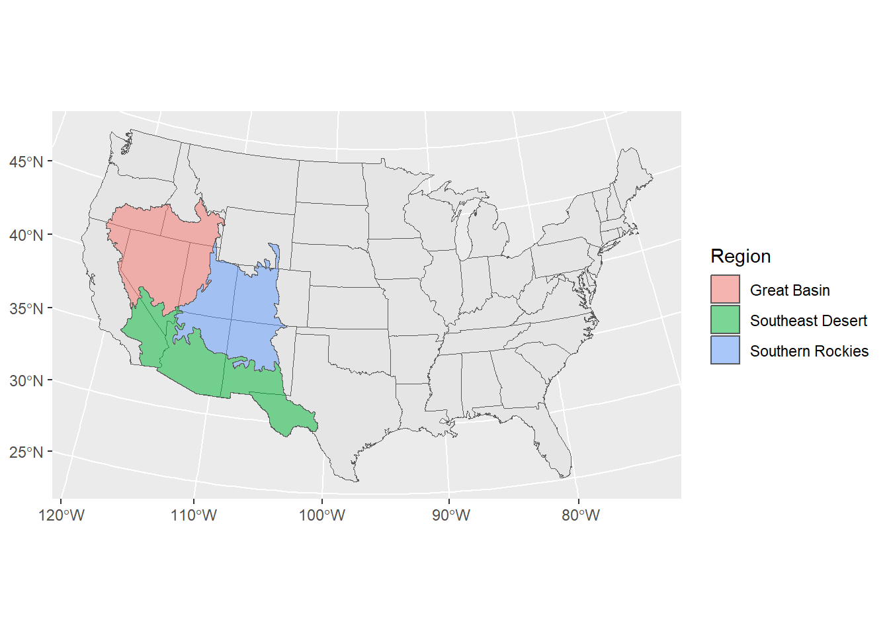
# Create a polygon of just the Four Corners region
corners_4 <- contig_usa %>%
filter(STATE %in% c("Utah", "Colorado", "Arizona", "New Mexico"))
ggplot(corners_4) +
geom_sf()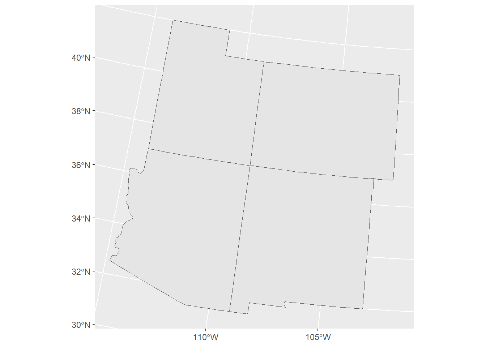
# add the landcover boundaries to this map
ggplot() +
geom_sf(data = corners_4) +
geom_sf(data = regions,
aes(fill = Region), alpha = 0.5)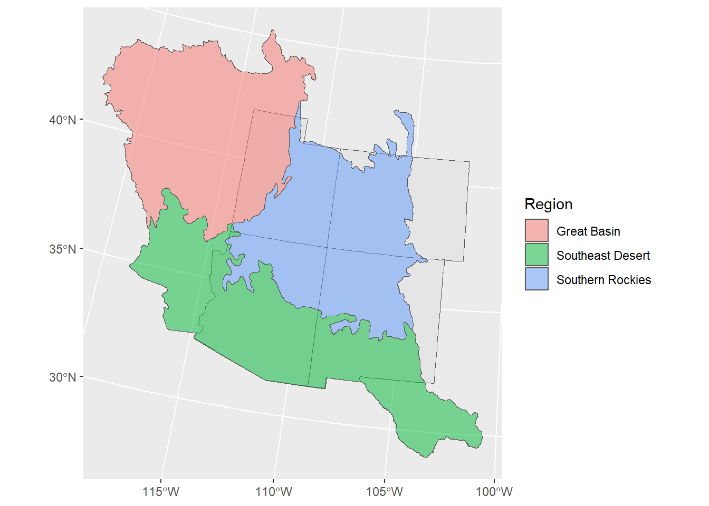
# Make some mapping adjustments
ggplot() +
# add the US underlayer
geom_sf(data = contig_usa, linetype = 2) +
geom_sf(data = regions,
aes(fill = Region)) +
geom_sf(data = corners_4, col = "grey10", fill = NA) +
# Zoom the plot window to the 4 Corners region
xlim(c(st_bbox(corners_4)["xmin"], st_bbox(corners_4)["xmax"])) +
ylim(c(st_bbox(corners_4)["ymin"], st_bbox(corners_4)["ymax"])) +
theme_bw()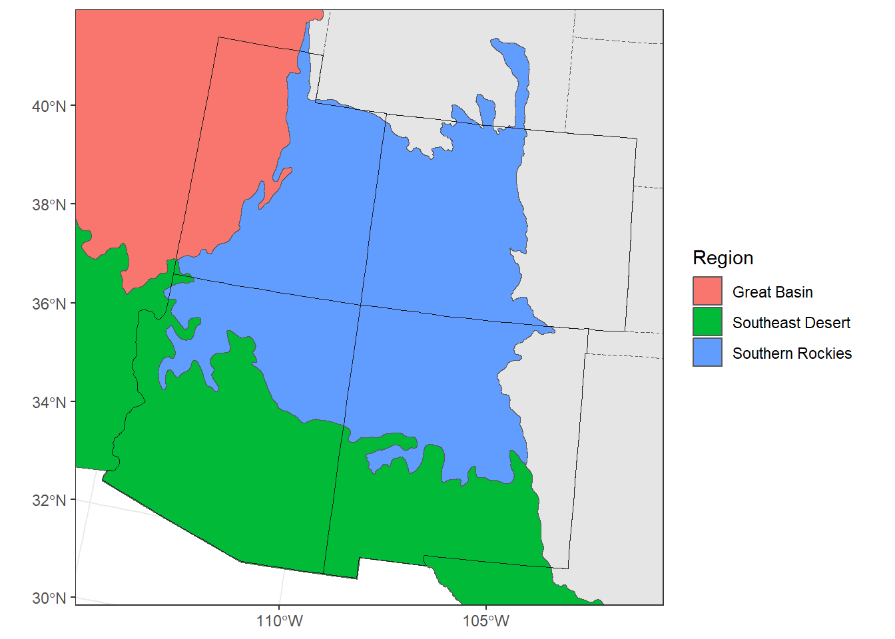
# Load the landcover rasters
basin <- rast("Data/Visualization/Landcover/Great_Basin.tif")
desert <- rast("Data/Visualization/Landcover/Southeast_Desert.tif")
rockies <- rast("Data/Visualization/Landcover/Southern_Rockies.tif")
basin## class : SpatRaster
## dimensions : 3197, 3199, 1 (nrow, ncol, nlyr)
## resolution : 300, 300 (x, y)
## extent : -2155875, -1196175, 1653645, 2612745 (xmin, xmax, ymin, ymax)
## coord. ref. : NAD_1983_Albers
## source : Great_Basin.tif
## name : Great_Basin
## min value : 42
## max value : 584## class : SpatRaster
## dimensions : 4050, 5304, 1 (nrow, ncol, nlyr)
## resolution : 300, 300 (x, y)
## extent : -2036715, -445515, 681405, 1896405 (xmin, xmax, ymin, ymax)
## coord. ref. : NAD_1983_Albers
## source : Southeast_Desert.tif
## name : Southeast_Desert
## min value : 39
## max value : 584## class : SpatRaster
## dimensions : 3596, 3072, 1 (nrow, ncol, nlyr)
## resolution : 300, 300 (x, y)
## extent : -1616265, -694665, 1206945, 2285745 (xmin, xmax, ymin, ymax)
## coord. ref. : NAD_1983_Albers
## source : Southern_Rockies.tif
## name : Southern_Rockies
## min value : 46
## max value : 584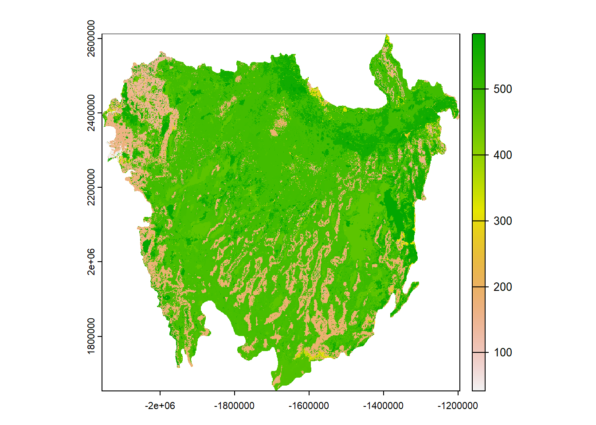
## class : SpatRaster
## dimensions : 6438, 5701, 1 (nrow, ncol, nlyr)
## resolution : 300, 300 (x, y)
## extent : -2155875, -445575, 681405, 2612805 (xmin, xmax, ymin, ymax)
## coord. ref. : NAD_1983_Albers
## source(s) : memory
## name : Great_Basin
## min value : 39
## max value : 584# Project the 4 corners polygon to the CRS of the landcover raster
# (it's easier to project a vector than a raster)
st_crs(land)## Coordinate Reference System:
## User input: NAD_1983_Albers
## wkt:
## PROJCRS["NAD_1983_Albers",
## BASEGEOGCRS["NAD83",
## DATUM["North American Datum 1983",
## ELLIPSOID["GRS 1980",6378137,298.257222101004,
## LENGTHUNIT["metre",1]]],
## PRIMEM["Greenwich",0,
## ANGLEUNIT["degree",0.0174532925199433]],
## ID["EPSG",4269]],
## CONVERSION["Albers Equal Area",
## METHOD["Albers Equal Area",
## ID["EPSG",9822]],
## PARAMETER["Latitude of false origin",23,
## ANGLEUNIT["degree",0.0174532925199433],
## ID["EPSG",8821]],
## PARAMETER["Longitude of false origin",-96,
## ANGLEUNIT["degree",0.0174532925199433],
## ID["EPSG",8822]],
## PARAMETER["Latitude of 1st standard parallel",29.5,
## ANGLEUNIT["degree",0.0174532925199433],
## ID["EPSG",8823]],
## PARAMETER["Latitude of 2nd standard parallel",45.5,
## ANGLEUNIT["degree",0.0174532925199433],
## ID["EPSG",8824]],
## PARAMETER["Easting at false origin",0,
## LENGTHUNIT["metre",1],
## ID["EPSG",8826]],
## PARAMETER["Northing at false origin",0,
## LENGTHUNIT["metre",1],
## ID["EPSG",8827]]],
## CS[Cartesian,2],
## AXIS["easting",east,
## ORDER[1],
## LENGTHUNIT["metre",1,
## ID["EPSG",9001]]],
## AXIS["northing",north,
## ORDER[2],
## LENGTHUNIT["metre",1,
## ID["EPSG",9001]]]]# Crop and mask the landcover raster to just the 4 Corner states
land <- crop(land, corners_4) %>%
mask(corners_4)
plot(land)
plot(corners_4$geometry, add = T)# Right now, the landcover raster is labeled by numbers, where each number corresponds to a land type.
# We don't know what the numbers on their own mean, but we have a dataframe that has this information
land_info <- read.csv("Data/Visualization/Landcover/Landcover_Attributes.csv")
head(land_info[,1:5])## Value NVC_CLASS SC NVC_SUBCL
## 1 0
## 2 1 Forest & Woodland 1.A Tropical Forest & Woodland
## 3 2 Forest & Woodland 1.A Tropical Forest & Woodland
## 4 3 Forest & Woodland 1.A Tropical Forest & Woodland
## 5 4 Forest & Woodland 1.A Tropical Forest & Woodland
## 6 5 Forest & Woodland 1.A Tropical Forest & Woodland
## NVC_FORM
## 1
## 2 Tropical Flooded & Swamp Forest
## 3 Tropical Flooded & Swamp Forest
## 4 Tropical Flooded & Swamp Forest
## 5 Mangrove
## 6 Tropical Dry Forest & Woodland# Change the landcover raster into a dataframe
names(land) <- "land_class"
land_cover <- as.data.frame(land, xy = T) %>%
mutate(land_class = round(land_class)) %>%
# join with the dataframe of the land classes
left_join(land_info, by = c("land_class" = "Value")) %>%
# remove NA cells
filter(!is.na(NVC_CLASS))
head(land_cover[,1:5])## x y land_class NVC_CLASS SC
## 1 -1475625 2251755 489 Desert & Semi-Desert 3.B
## 2 -1475325 2251755 489 Desert & Semi-Desert 3.B
## 3 -1475025 2251755 244 Forest & Woodland 1.B
## 4 -1474725 2251755 428 Shrub & Herb Vegetation 2.C.
## 5 -1474425 2251755 489 Desert & Semi-Desert 3.B
## 6 -1475925 2251455 489 Desert & Semi-Desert 3.BNow we can plot based on the land classifications instead of the numbers.
ggplot() +
geom_raster(data = land_cover,
aes(x = x, y = y, fill = NVC_CLASS)) +
geom_sf(data = corners_4, fill = NA)Again, the default colors look a little ugly. We could pick colors with hcl.pals() again. But since these colors represent land types, let’s pick colors that would describe each land type.
I used the website Colors in R to get these colors.
## [1] "Agricultural & Developed Vegetation"
## [2] "Aquatic Vegetation"
## [3] "Desert & Semi-Desert"
## [4] "Developed & Other Human Use"
## [5] "Forest & Woodland"
## [6] "Introduced & Semi Natural Vegetation"
## [7] "Nonvascular & Sparse Vascular Rock Vegetation"
## [8] "Open Rock Vegetation"
## [9] "Open Water"
## [10] "Polar & High Montane Scrub, Grassland & Barrens"
## [11] "Recently Disturbed or Modified"
## [12] "Shrub & Herb Vegetation"# Assign colors to each class name
land_cols <- data.frame(
cols = c("Agricultural & Developed Vegetation" = "#88b66c",
"Aquatic Vegetation" = "#b0e2ff",
"Desert & Semi-Desert" = "#f9d896",
"Developed & Other Human Use" = "#874e5c",
"Forest & Woodland" = "#376822",
"Introduced & Semi Natural Vegetation" = "#8f8228",
"Nonvascular & Sparse Vascular Rock Vegetation" = "#e8f2d4",
"Open Rock Vegetation" = "#d7b895",
"Open Water" = "#a8c6fc",
"Polar & High Montane Scrub, Grassland & Barrens" = "#fffafb",
"Recently Disturbed or Modified" = "#8c451a",
"Shrub & Herb Vegetation" = "#dae8b0")
)
# Adjust the dataframe to be more clear
land_cols$land_type = row.names(land_cols)
row.names(land_cols) <- NULL
land_cols## cols land_type
## 1 #88b66c Agricultural & Developed Vegetation
## 2 #b0e2ff Aquatic Vegetation
## 3 #f9d896 Desert & Semi-Desert
## 4 #874e5c Developed & Other Human Use
## 5 #376822 Forest & Woodland
## 6 #8f8228 Introduced & Semi Natural Vegetation
## 7 #e8f2d4 Nonvascular & Sparse Vascular Rock Vegetation
## 8 #d7b895 Open Rock Vegetation
## 9 #a8c6fc Open Water
## 10 #fffafb Polar & High Montane Scrub, Grassland & Barrens
## 11 #8c451a Recently Disturbed or Modified
## 12 #dae8b0 Shrub & Herb VegetationA test to see what these colors look like
(Hint: I picked my colors and then checked them with “Coblis”, a color-blind simulator, to see if the colors are distinguishable even for different types of colorblindness. I then adjusted to get a palette with colors that go well together.)
# Add everything together
landcover_plot <- ggplot() +
geom_sf(data = st_transform(can_mex, st_crs(corners_4)), col = NA) +
geom_sf(data = st_transform(contig_usa, st_crs(corners_4)),
col = "white") +
geom_raster(data = land_cover,
aes(x = x, y = y, fill = NVC_CLASS)) +
geom_sf(data = corners_4, fill = NA, size = 0.75, col = "white") +
scale_fill_manual(values = land_cols$cols,
breaks = land_cols$land_type) +
# add the land boundaries, change the linetype to dotted and make the fill transparent
geom_sf(data = regions,
fill = NA, col = "grey20", linetype = 2, linewidth = 0.75) +
theme_bw() +
labs(fill = "Land Cover Classification", x = "", y = "") +
xlim(c(st_bbox(corners_4)["xmin"], st_bbox(corners_4)["xmax"])) +
ylim(c(st_bbox(corners_4)["ymin"], st_bbox(corners_4)["ymax"]))
landcover_plot